质数——公元前300年
多个世纪以来，数学家都对质数情有独钟。有些数学家甚至认为，在质数的背后隐藏着创造的秘密。
一个质数就是一个比自然数1更大的自然数，但除了1与其本身之外，它不能被其他自然数整除。这些质数就像是一个个原子——是构建整数的基础。
一个大于1且不是质数的自然数被称为合数。比方说，5就是质数，因为它只能被1与5这两个数整除，而6则是合数，因为6除了可以被1与6整除之外，还可以被2与3整除。算术基本定理体现了质数在数论中的核心位置。不考虑顺序的话，任何比1大的整数都可以由唯一的一组质数相乘得到。这一理论要求我们不把数字1视为质数。
质数的数量是无限的，欧几里得在公元前300年就已经证明了这点。现在还没有一条实用的公式可以一劳永逸地将所有的质数与合数分列出来。但是，质数的分布——也就是质数的统计学表现，是有模型的。这一研究方向得到的首个结果就是质数定理，在19世纪末期得到了证明。这一定理是这样阐述的：某个随机选择的数n是质数的概率与该数本身的数位是成反比的，或者说与数n的对数是成反比的。
直到如今，围绕着质数理论仍存在着许多疑问，比如哥德巴赫猜想就提出，每一个大于2的偶整数都可以用两个质数之和去表达。而孪生质数猜想则提出，存在着无数对数值差异为2的质数组。这些悬而未决的问题推动着数论的各个分支不断发展。
质数的历史
古埃及的一些历史文献表明，他们已经拥有了一些质数的知识：比如说，在莱因德纸草书里，我们可以看到古埃及人提出的分式展开，了解到了质数与合数之间的诸多差别。但是，最早关于质数的明确研究则来自古希腊人。欧几里得的《几何原本》一书就提到了有关质数的重要理论，其中就包括质数的无限性以及算术的一些基本定理。欧几里得还演示了如何通过梅森质数去建构一个完美的数。埃拉托色尼筛法据说是埃拉托色尼发现的，这是一种计算质数的简单方法，尽管我们今天用电脑发现的大数值质数是很难用这种方法去生成的。
在古希腊时代之后，有关质数的研究一直停滞不前，这样的情况直到17世纪才有所改变。1640年，皮埃尔·德·费马（在没有证明的前提下）阐述了费马定理（这个定理之后被莱布尼茨与欧拉所证明）。
——保罗·埃尔德什，数学家
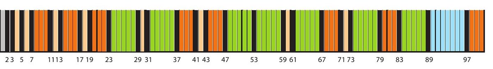
100以内的质数
浏览一遍100以内所有质数的名单，再据此预测100之外下一个质数是哪个数字，这几乎是不可能的。质数的分布似乎是随机与无序的，根本就没有任何模式可言，因此无法确定下一个质数是哪个数字。在100以内有25个质数，在100～199这个范围当中，它们的分布又是怎样的呢？数学家们很难承认自然选择质数的方式背后并没有一个明确的解释。到了19世纪，质数的研究有所突破。伯纳德·黎曼（Bernard Riemann）用一种全新的方式去看待质数问题。他开始了解到质数分布的随机性之下隐藏着一种微妙且出人意料的内在和谐性。正是这种和谐性让过去的数学家无法了解质数真正的秘密。他对质数这种和谐性的大胆预测，就是我们今天所熟知的“黎曼猜想”，这个猜想还有待证明与解释，这也是数学界至今最重要的谜题之一。
埃拉托色尼筛法——公元前250年
来自昔兰尼的埃拉托色尼（公元前276—前194年）是一位希腊数学家、地理学家、诗人、运动员、天文学家、音乐理论家。他是人类历史上第一个使用“地理学”这个名词的人，创建了一套我们所熟知的地理学名词系统，其中就包括纬度与经度系统。
作为一位数学家，他更多被人们记住的是他提出的埃拉托色尼筛法。这是在任何给定的限制条件下找到所有质数的一种古代算法。今天，它仍然是预测1000万以内所有质数的一种有效方法，虽然与电脑相比，使用这种方法显得有点多余。
埃拉托色尼筛法是如何操作的呢？要得到所有的质数，需要反复对每一个可分解的数（非质数）进行递归操作，先从2开始，筛去所有2的倍数；接下来在筛选出来的数里面进行新一轮的筛选，按顺序筛去后续数3的倍数……不断循环往复，直到筛去数值区间内的所有整数的倍数。这就是筛选法与试除法寻找质数的主要区别。因为试除法是按顺序试验每一个候选数能否被每一个数整除。
与很多古希腊数学家一样，埃拉托色尼的作品也没有流传下来。我们不能确定就是他发现了这个著名的筛法，但亚里士多德的儿子尼科马库斯在他的《算术入门》一书里将这一功劳归在埃拉托色尼身上。
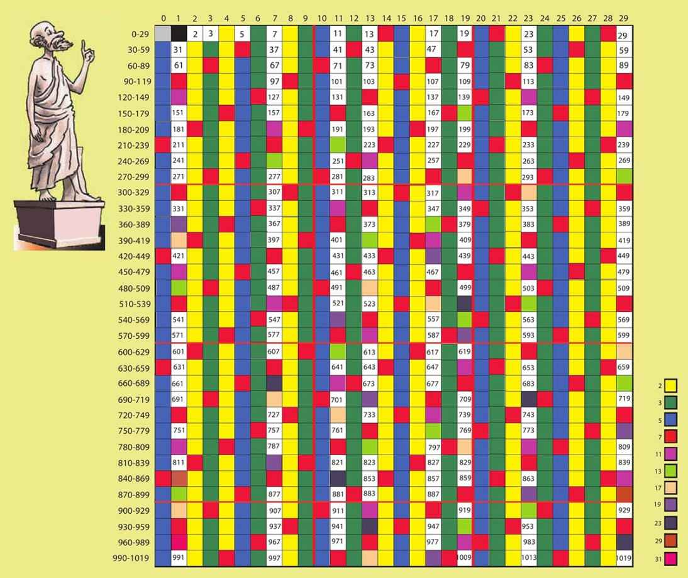
质数的模式——质数间隔
为了完成从数字1到1000的质数分布，你能想出下面这个表格末位应该涂什么颜色吗？所谓的质数间隔，是指两个连续质数之间的间隔。从1到1000之间的数值范围内，你可以看到质数2和3是唯一不存在任何间隔的，它们是唯一一对连续出现的质数。
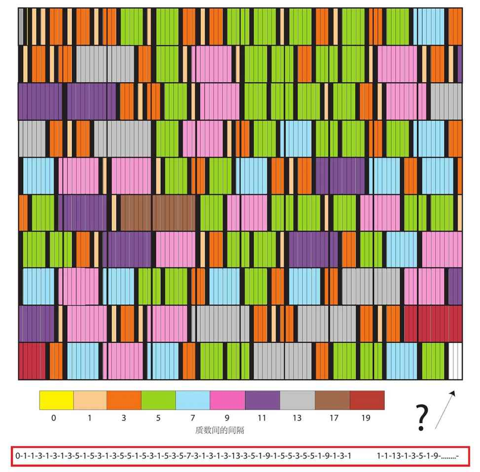
阿波罗尼奥斯的问题——公元前270年
来自佩尔格的阿波罗尼奥斯（公元前262—前190年）是一位古希腊数学家与天文学家，被同时代的人视为“最伟大的几何学家”。在他之后的许多学者，诸如托勒密、弗朗西斯科・马罗力克、艾萨克・牛顿、勒内・笛卡儿以及其他人都深受他突破性的方法与专业术语影响，特别是在圆锥曲线方面。
阿波罗尼奥斯创造出了我们今天所熟知的椭圆形、抛物线与双曲线等数学专业术语。他也被认为发展了偏心轨道和行星的假说，用以解释行星在天空中的视运动以及月亮的运转速度。
阿波罗尼奥斯提出的一个最著名问题就是以他的名字命名的“阿波罗尼奥斯问题”。
这个问题是这样的：假设一个平面有三个圆，你可以用多少种方法让第四个圆与这三个圆相切（就是只与这三个圆分别在一个点上接触）呢？
如图所示，你只能找到八种不同的可能性。
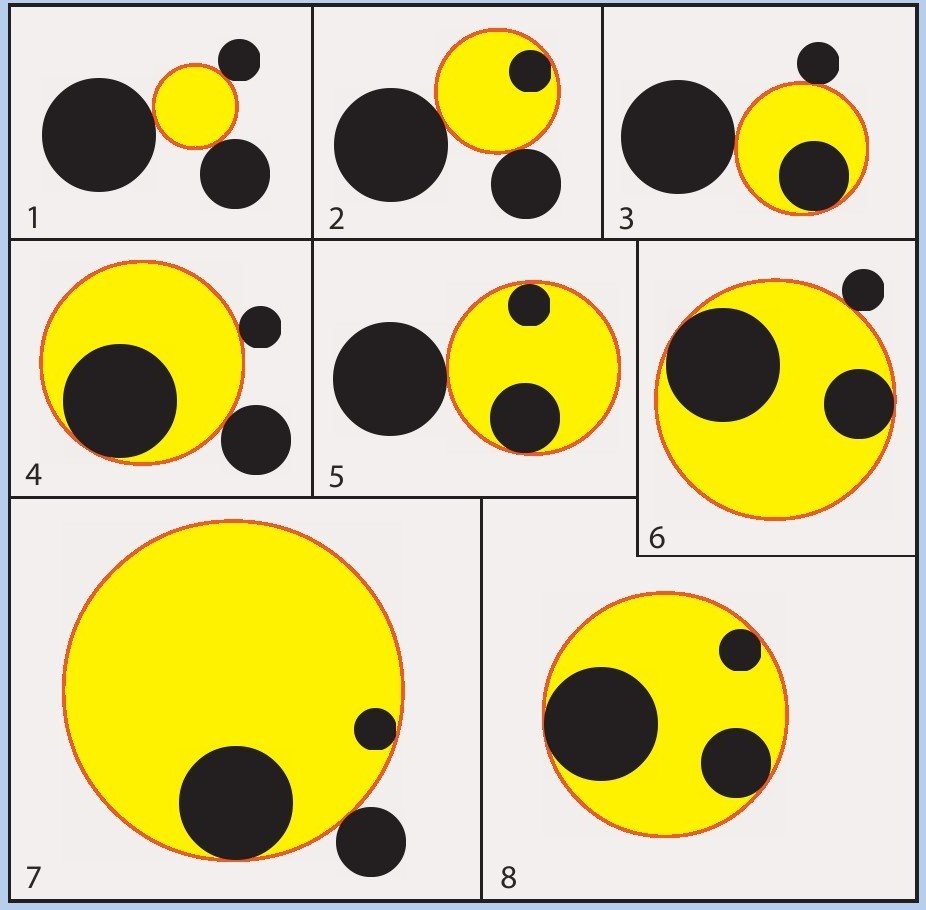
——阿基米德
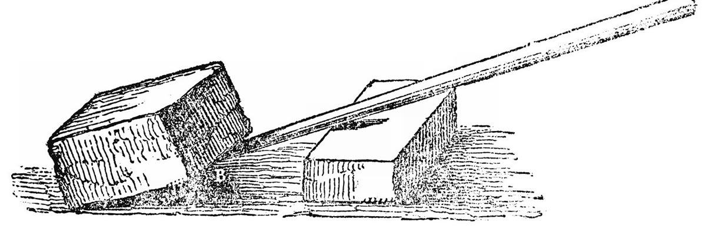
阿基米德的杠杆原理——公元前250年
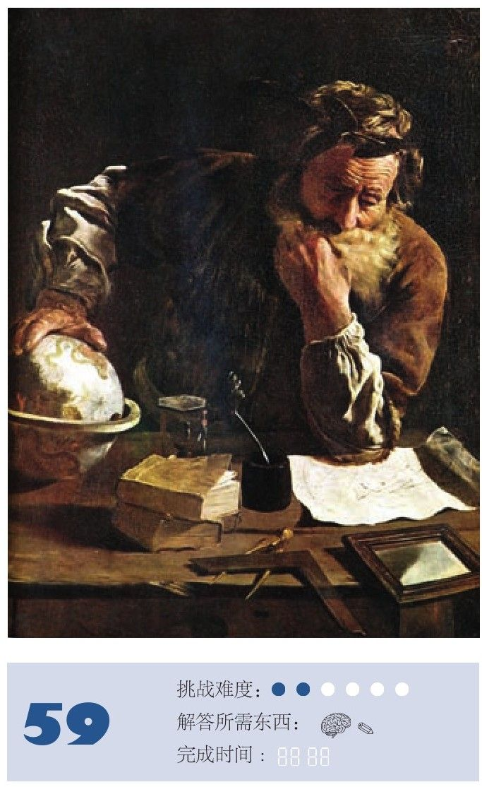
可以说，杠杆是最简单的一种“简单机械”了，其中蕴含着一种能量转换的机制。
这样的装置能否让我们凭空获得一些额外的能量呢？不能。但是，这样的机械可以将较小力的机械能转变成较大力的机械能。
一个重物可以用更小的力去提升起来：这就是杠杆原理。这个原理是阿基米德用几何推理的方法证明的。
这一原理表明，如果支点与外力之间的距离比重物离支点的距离更远，那么较小的力就能移动较重的物体。杠杆之所以能够增强这种外力，是因为这时某个点上的外力等同于这种外力乘以外力作用点到支点之间的垂直距离。
铁铲就是杠杆原理的一个具体应用。为了尽可能地发挥阿基米德的杠杆原理，你能说出该怎样使用铁铲吗？
阿基米德（公元前287—前212年）
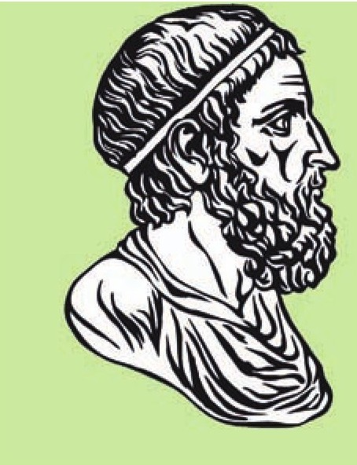
来自锡拉库扎的阿基米德是希腊的数学家、物理学家、工程师、发明家与天文学家。虽然有关他生平的记载不多，但他被视为古希腊最伟大的科学家之一，也可以说是人类历史上最伟大的科学家之一。
在他的物理学发现当中，就有为流体静力学、静力学奠定了基础的伟大壮举，同时，他还对杠杆原理做了数学层面上的解释。
与此同时，阿基米德还对圆周率π做了相当精确的计算，他还创造出了一种以他名字命名的螺线，为旋转曲面计算出了一个公式，还发明了一种表达极大数的独特系统。
阿基米德是在锡拉库扎遭受围困期间死去的。虽然罗马军官下令不得伤害他，但是一名罗马士兵还是将他杀害了。西塞罗描述过参观阿基米德坟墓时的感受，他发现墓碑上刻着一个圆柱内切球的图形，致敬阿基米德在数学上伟大的成就，他证明了：内切球的体积和表面积是圆柱体的三分之二（圆柱体的底面积要计算在内）。他的这个发现被视为他在数学上最伟大的成就。
“我找到了！”的时刻——公元前250年
据历史记载，阿基米德在发现空气静力学之后，赤身裸体从浴盆里走出来，大声地说：“我找到了！”
当时，他正在解决锡拉库扎国王海伦提出的一个问题，就是检查一顶新皇冠是否含金量十足的问题。因为国王认为这顶皇冠含有其他的不纯杂质。
阿基米德在没有熔化这顶皇冠的情况下解决了这个难题，因为他发现了一个以他的名字命名的定理：一个浸泡在液体里的物体其重量小于实际重量，差值为新排开液体的重量。
在那些研究数学史的数学家看来，阿基米德赤身裸体大声喊叫的故事是非常值得怀疑的，这并不是因为阿基米德当时赤身裸体的状况——因为在那个时代，赤身裸体倒也不是一件有伤风化的事情，而是因为当时的阿基米德已经是一位身份尊贵的名人，这样赤身裸体大声喊叫，对他们来说着实难以接受。
在科学史上，还有不少关于创造性思维突然迸发的情况。据说，詹姆斯·瓦特就是在观察烧水的茶壶时萌生了制造蒸汽机的念头。莱奥·齐拉特在等待红灯的时候，灵感突然袭来，想到了中子链式反应（制造原子弹的方法）。
阿基米德定理
观察下图所示的有关阿基米德实验的结果，你认为阿基米德会得出怎样的结论呢？
第一步：将一块与那顶有疑问的皇冠一样重的金子放下去。
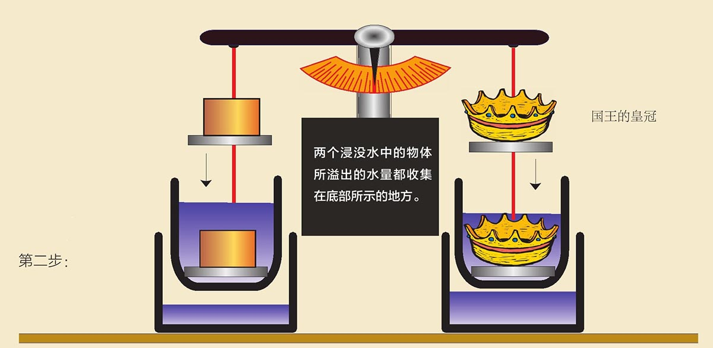
滑轮系统——公元前250年
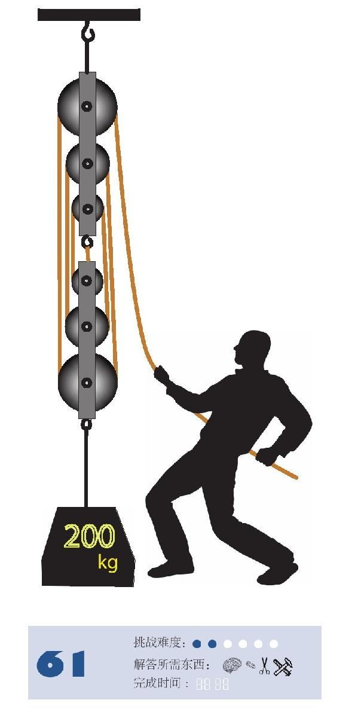
滑轮系统又称为滑轮组系统。绳索滑轮系统是利用一根绳索，通过一个或一个以上的滑轮将线性动力传送出去，从而以较小的力将较重的物体拉升上来。滑轮系统是唯一一种能将机械效益限定为整数的简单机械装置。滑轮系统通常能够用来拉升比外力多出两倍的重物。如图所示，我们所举的例子就是一个由三个固定滑轮加上三个可移动滑轮组成的复合滑轮系统，能够拉升重达200千克的物体。你认为这个人能够通过绳子拉起这个200千克的物体吗？
简单机械的介绍
所谓简单机械，就是指能够改变力的方向或大小的一种机械装置。它们是最简单的能够提供机械效益（即杠杆）的装置。
简单机械的思想可以追溯到古希腊哲学家阿基米德，他研究过“阿基米德系列”的简单装置。在公元前3世纪左右，他就对杠杆、滑轮与螺旋进行过相关的研究。他发现了杠杆具有机械效益的原理。之后的古希腊哲学家界定了五种经典的简单机械，并大概计算出了每一种机械装置所具有的机械效益。
来自亚历山大港的海伦（约公元10—75）在他的著作《机械学》一书里就列举了能够让重物处于移动状态的五种简单装置：杠杆、绞盘、滑轮、楔子与螺旋，并且描述了它们的制造方法与使用方式。但是古希腊人对此的认知还局限于简单装置的静力学方面（各种力的平衡）上，并没有将动力学（力与距离之间的交换）与功的概念考虑在内。
机械功率
文艺复兴时期，人们继续研究简单机械，接着研究机械功率。很多科学家开始从如何才能使之做更多有用功的角度进行研究，最终衍生出了一种有关机械功率的全新概念。
1586年，来自佛兰德的工程师西蒙·斯泰文在五种经典简单机械装置之外又加上第六种——斜面。有关简单机械的完整动态理论则是由意大利科学家伽利略总结出来的。他也是第一个明白简单机械并没有创造出全新能量，而是转移能量的人。
机械装置里有关滑动摩擦的经典法则是意大利科学家列奥纳多·达・芬奇（1452—1519）发现的。他的这些发现后来也被纪尧姆·阿蒙东发现，之后于1785年在查尔斯·奥古斯丁·德·库伦的研究下得到了进一步的发展。
有关圆周率π小数点的康威集合
圆周率π是随机的吗？要是将圆周率π后面的小数点按照十个数字为一组隔离开来，是否会有一组数字包含从0到9这十个数字（也就是0，1，2，3，4，5，6，7，8，9）？
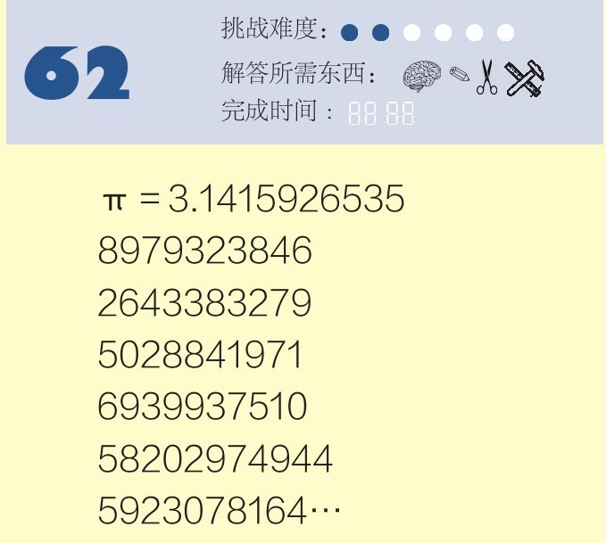
圆周率π与圆周长
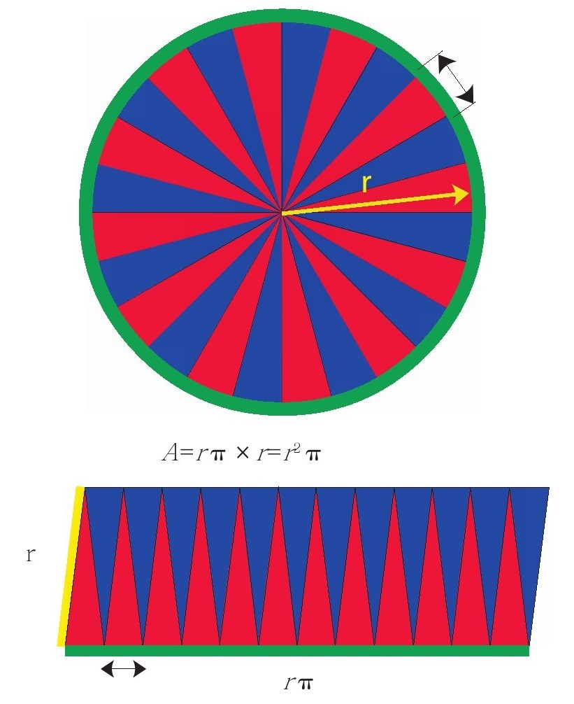
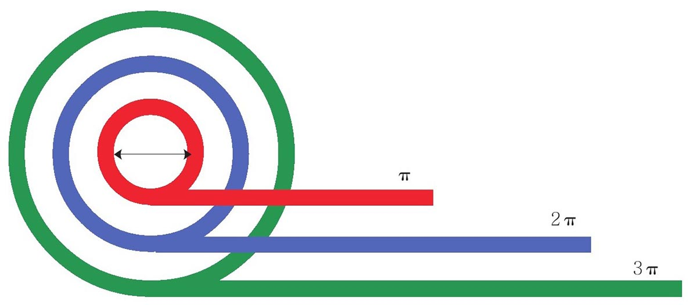
史前人类肯定已经观察到一点，那就是轮子的直径越长，那么它所走的路程就越远。进入早期文明的人类知道，一个圆的周长与该圆直径的比率是一样的，不管这些圆的面积多大，情况都是如此。这个比率基本上恒定在一个略大于3的数字。今天，我们将这个比率称为圆周率π（这个字母相当于古希腊字母表的P）。
计算一个圆的面积，这曾是一个颇具挑战的数学难题。
阿基米德试图运用“化圆为方”这种方法去解答这个问题，试图找到一个正方形，其面积等于一给定半径的圆的面积。他的研究方法引出了一个精确的公式。
圆的半径r可以将圆分为许多个相近的等腰三角形，这个等腰三角形的底边的长度都是a（这是一个接近直线的小圆弧），这些等腰三角形可以排列成一个平行四边形。
圆被分成的部分越多，这些部分就越像三角形。这些三角形的面积会越来越小，而它们组成的图形也会越来越像长方形。
每一个长方形的高度基本上等于圆的半径。因此，一个圆的周长=2 x rπ。每种颜色的三角形构成这个圆周长的一半，因此长方形的边长就是其周长的一半，也就是πxr。因此，圆的面积=长方形的面积=高度x宽度=r x（πx r）=πx r2。这就是我们今天所熟知的公式。
请注意，这个公式得出来的不过是一个近似值。这种方法实际上只在每个三角形的底边长为无穷小时才起作用。
内切、外切与无限性——公元前250年
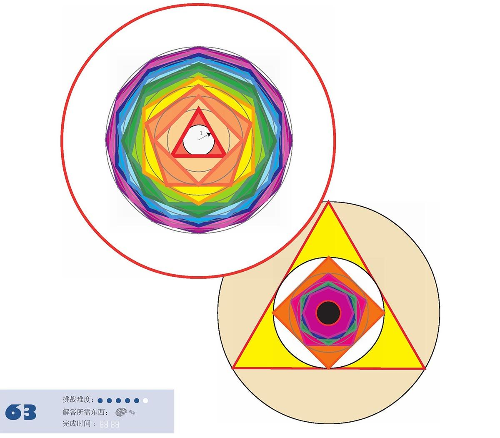
如图所示，最里面的内圆的半径为1，该圆被一系列的圆与正多边形外切与内切，首先从一个等边三角形开始，这个等边三角形被一个圆内切，接着就是被正方形、正五边形、正六边形、正七边形、正八边形、正九边形、正十边形、正十一边形与正十二边形内切与外切。
上图所示的模式清晰地显示了，初始圆经过十次外切之后，需要一个十二边形才能对其进行外切。如果你无限次地重复这个过程，就需要更大的圆与边数更多的多边形，随着多边形的边数不断增多，与其外切的圆的半径就会越来越大。
你对此有怎样的想法呢？当我们持续这样的过程，外切的圆是否会变得无限大呢？
你也可以通过内切的方法对一个一开始设定的圆重复这样的过程。这样不断缩小的过程最终会让最里面的圆变得无限小吗？而最小的内切多边形有多少条边呢？
阿基米德的十四巧板——公元前250年
十四巧板又被称为“阿基米德的盒子”，这是阿基米德所著的一本数学专著。
这可以追溯到阿基米德所写的两篇年代久远的文章。他在这两篇文章里提到了一种与七巧板类似的游戏。其中一份手稿是一个希腊语的重写本（这份手稿上之前已经写有文字，擦掉之后再次使用）。1899年，这份手稿在君士坦丁堡被发现，而另一份手稿则是阿拉伯语的译本，可以向前追溯到10世纪。
至于阿基米德是否发明了这个游戏，或只是探寻了其中的几何属性，至今已经无从知晓。在一份希腊语手稿里，十四巧板的每个部分的面积都是固定的。根据手稿的内容，阿基米德写了一本关于十四巧板的书，之后却散失了2000年。这本书的部分内容最近在这份重写本上被发现了，这又激发了很多数学家的极大兴趣。
这个游戏包含有14块多边形形状的象牙，形成一个12×12的正方形。与七巧板一样，这个游戏要求我们对每一块象牙进行重新布置，从而形成一些有趣的东西（如人像、动物形状或其他物体等）。我们不知道阿基米德的版本是否允许象牙翻转过来。在古希腊，这样做是不被允许的。
阿基米德可能还对如下问题充满了兴趣：如何才能用14块象牙形成一个正方形呢？这个问题在2200多年后才得到了回答。2003年，比尔·卡特勒（Bill Cutler）利用电脑程序解答了这一难题。他发现一共有536种不同的解答方法，其中旋转与镜像不被视为不同解法。
十四巧板
如图所示，这是在一个12×12的正方形网格里，由格点形成的十四巧板结构，由14个部分组成。
你能计算出这14个部分的面积吗？
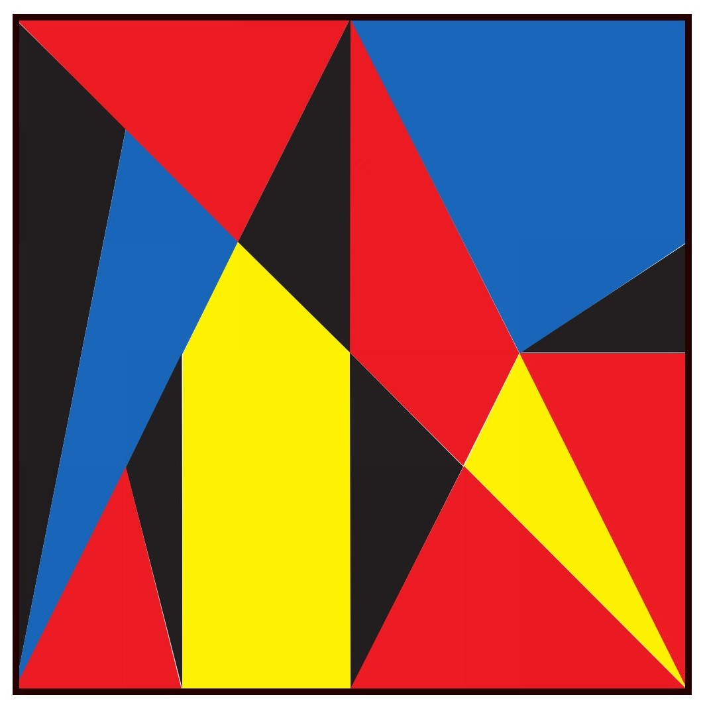
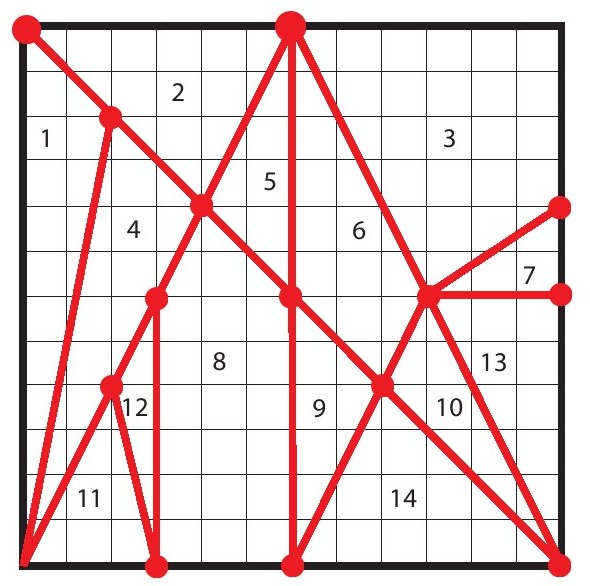
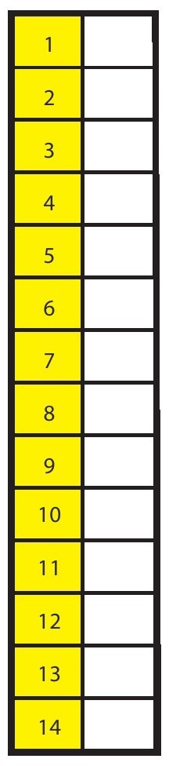
十四巧板做成的大象
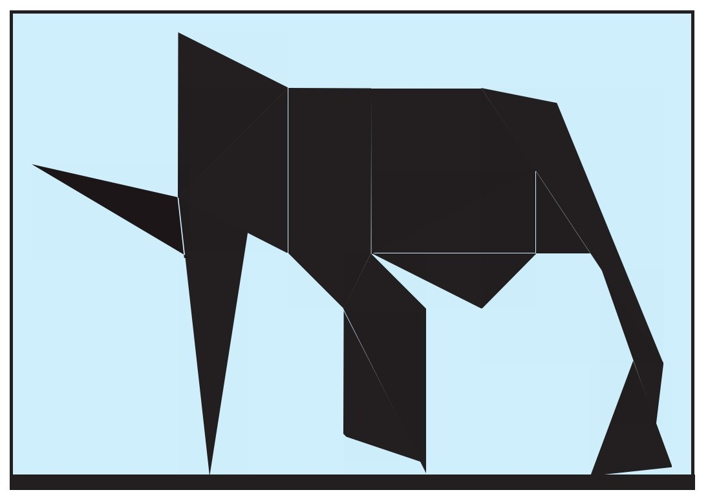
马格努斯·奥索尼乌斯（Magnus Ausonius）在他的著作里，阐述了他著名的十四巧板做成的大象拼图。从现有的历史文献可知，这是历史上最早出版的拼图。这个游戏的目标就是要通过十四巧板的每个部分的重组，拼出一个大象的形状。你能做到吗？
数学创造艺术
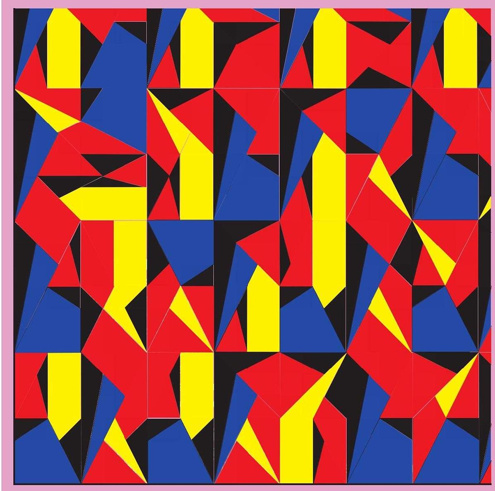
如图所示，你可以看到十六种解决十四巧板正方形问题的解答方法。
在君士坦丁堡的一本祈祷书里发现的重写本（参见前一页有关“阿基米德的十四巧板”）受到了李维尔·内兹博士（Reviel Netz）的重视。经过研究，他得出了一个结论，那就是阿基米德试图解答这个问题：通过十四巧板拼正方形有多少种不同的方法。现在，我们发现一共有17152种不同的方法。因此，十四巧板不仅是最早的智力拼图，还是数学史上最早关于组合学的智力拼图。
鞋匠的小刀
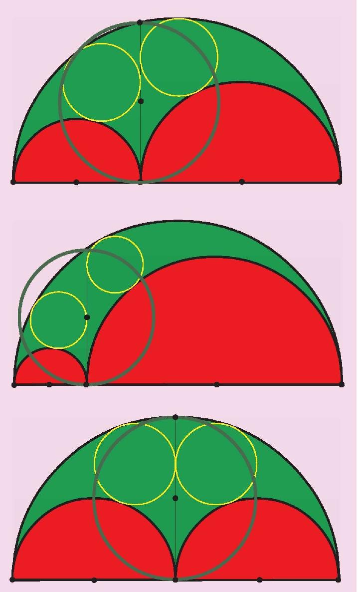
阿基米德是第一个研究“鞋匠的小刀”图形问题的人，这些内容都收录在他的著作《引理集》一书里。
所谓的“鞋匠的小刀”是由三个半圆组成的，其中两个半圆的直径加起来等于第三个圆的直径，这样三个圆可以是任意大小的（如图的绿色部分所示）。
这样的图形有着让人惊讶且违反直觉的属性与巧合。在这里，我们只需要提其中让人惊讶的几点：阿基米德发现，两个半圆之外的面积（绿色区域）加起来等于灰线围成的圆的面积，其直径等于两个小半圆的交点到那个较大半圆的垂直线的长度，如图所示。第三幅图中，当两个较小的半圆完全一样时，这一点就非常明显了。
两个较小圆弧的长度之和，等于较大圆弧的长度。
两个较小的圆，两个完全一样的圆（黄色区域），同时接触到了垂直线，那么不管这两个较小半圆是大是小，这两个小圆都是一样的。
在长达500年的时间里，“鞋匠的小刀”一直为世人所遗忘，直到帕普斯继续对这个问题进行深入的研究之后，才发现了这些图形所具有的惊人属性。
最近，利昂·班科夫与维克托·蒂博出版了一本研究“鞋匠的小刀”图形属性的详尽手稿，阐述了许多之前从未被发现的属性。
阿基米德的“四个半圆”——公元前200年
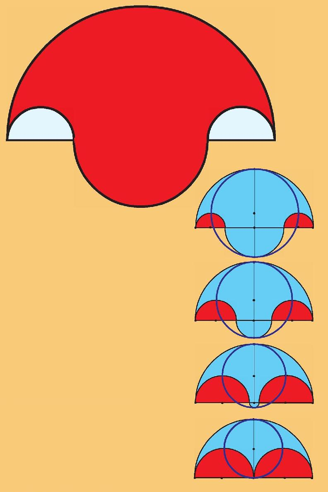
“四个半圆”是阿基米德发现的一种具有美感的图形。这是古希腊一种盾牌的名称。它是指沿着大半圆的直径分布的四个半圆围起来的闭合区域（红色区域）。在直径一侧的两个半圆的面积是相等的，它们在大半圆的内部；而中间的半圆则在直径的另一侧。
从大半圆直径中点位置引出的垂线与大半圆直径两侧上下相对的半圆分别相交，以这两个交点为直径绘制出一个圆来，阿基米德证明了“四个半圆”的面积就等于这个圆的面积。右边给出了四个例子。
请注意，在第四个例子里，位于直径中间的小半圆面积小到几乎看不见。在这里，我们还有“四个半圆”的一种特殊状态，那就是在第四幅图里，第四个半圆的直径几乎为零。你会发现，它变成了Arbelos图形，即所谓的“鞋匠的小刀”。
让人感到惊讶的是，阿基米德竟然在没有今天这些数学工具的情况下，发现了这些图形的关系——这是真正的创造力的壮举。
阿基米德的镜子会生火——公元前214年
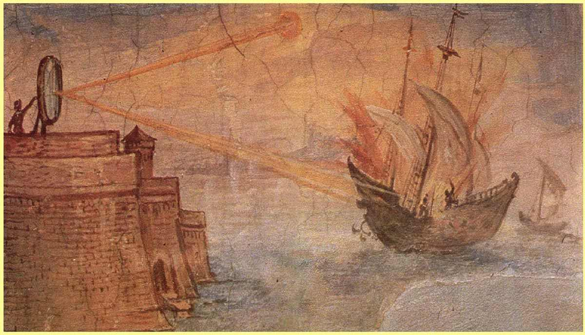
在科学、魔术、谜题或日常生活中，镜子似乎能够完成一些不可能完成的壮举。古希腊著名的科学家阿基米德就充分发挥想象力，将镜子运用到他的许多实用发明当中。
根据古代的历史记载，阿基米德最让人印象深刻的成就与战争有关。公元前214年，他利用镜子将太阳的光线聚焦起来，从而让围困锡拉库扎城的罗马战舰燃烧起来。
这个故事让很多科学家与历史学家感到困惑，他们认为这是不可能做到的。但是一些研究人员努力证明了一点，那就是阿基米德的确能够通过镜子将太阳光聚焦起来，从而让罗马战舰燃烧起来。
这些实验假设，阿基米德无法使用一面很大的镜子，但却能通过大量小镜子的反射取得与一面大镜子等同的效果，这些镜子可能是一种经高度打磨的光滑金属。他是否使用了守卫锡拉库扎城士兵的头盔呢？
阿基米德是否让他的士兵排成一行，然后让他们利用镜子将太阳的光线聚焦到罗马的战舰上，从而让这些战舰燃烧起来呢？
1747年，乔治斯·路易斯·勒克莱尔（Georges Louis Leclerc）就此进行了一次实验。他使用168面普通的长方形平面镜，结果成功地点燃了在100米之外的一堆木材。这样看来，阿基米德的确是有可能做到的，因为围困锡拉库扎港口的罗马战舰距离港口应该不会超过20米。
1973年，一位希腊工程师进行了类似的实验。这一次，他使用了70面镜子，将太阳的光线聚焦在一艘距离岸边80米的划艇上。在镜子将太阳光聚焦在划艇上几秒钟之后，这艘划艇就开始燃烧起来。为了做到这点，镜子必须要有点凹，阿基米德当年很可能也是这样做的。
另一方面，近代关于这方面的大多数实验也表明，最好的结果是点燃50米之外的一小块木头。这样的实验结果是远远不够的。而有关阿基米德利用镜子聚焦太阳光线来点燃罗马战舰，这似乎太过牵强了。但事实究竟如何？我们可能永远都无法知道。
埃拉托色尼测量地球——公元前200年
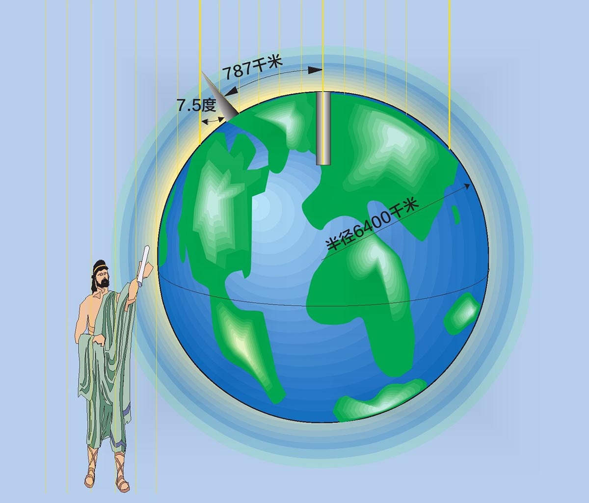
就洞察力来说，虽然早期的希腊几何学家在理论层面上取得了巨大的突破，但亚历山大港的数学家埃拉托色尼（公元前276—前194年）取得的成就是最大的。在一个夏日的正午时分，他在塞义尼城发现了正午时分阳光的反射光可以在一个深井里看到。要想出现这种状况，太阳就必须刚好处于正上方，光线也直接照射在地球的中心。在同一天的正午，太阳在亚历山大港投下了一个阴影，据测量，偏斜的角度是7.5度，或者说是一个整圆的1/50左右。
埃拉托色尼还认识到，亚历山大港到塞义尼在南北方向上的距离大约是787千米。这些数据足够让他相当精确地计算出地球的周长。你能用这些数据计算出地球的周长吗？
埃拉托色尼生于昔兰尼，现在位于利比亚境内。他在雅典接受教育，后来在一座缪斯神庙里当了一名图书管理员，这座图书馆藏有数十万卷纸莎草卷、牛皮卷。当时，他的绰号是贝塔，他从事的很多工作并不算最高级的，虽然他当时已经是一位公认的学者。时至今天，他所取得的成就是创造性思维的最佳体现，为当代的科学方法提供了最早的例子。
——埃拉托色尼
面积与周长
一组四个不同形状的图形（圆、正方形、三角形与六边形）都有着相同的面积。另外一组的四个图形则有着相同的周长。你能整理出两组图形，将面积相等与周长相等的图形分别归类吗？
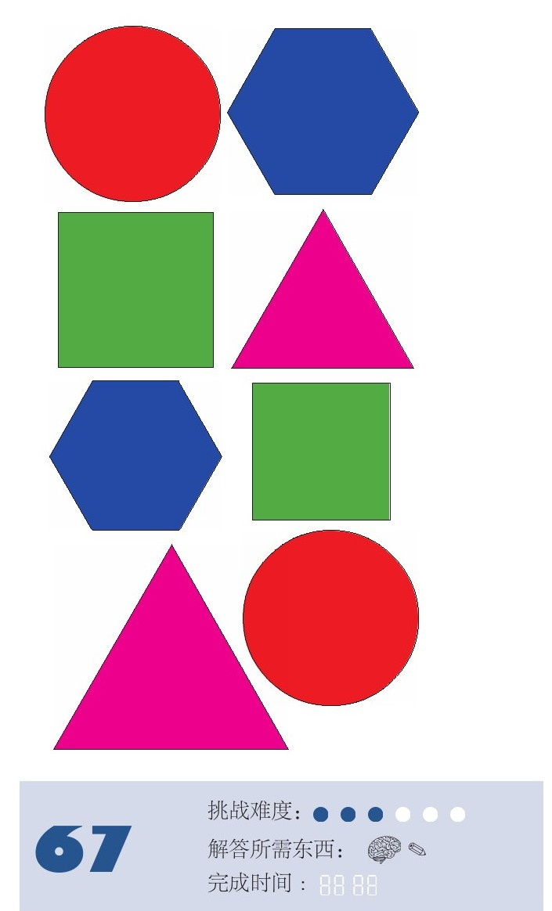
等周问题
解答等周问题的方法必然是凸圆（比如，曲线向外延伸、向外拓延等情况）。
一个非凸形状的图形的面积可以在保持其周长不变的情况下，变得更大。细长形状的图形能够变得更圆，使其周长保持不变，而面积变得更大。
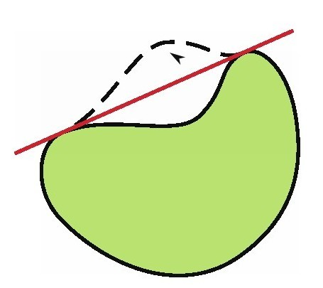
狄多女王的问题——公元前200年
对长方形的物体而言，面积与体积都是很容易计算的。但要计算其他形状的图形或物体的面积与体积，则要困难得多，曲线类的图形更是如此。
古希腊人知道，一个封闭图形的周长是很重要的——事实上，“米”这个单词可以追溯到古希腊语，意思是“测量”。因为很多希腊人都生活在岛屿上，他们充分了解测量面积的陷阱。毕竟，我们很容易发现，岛屿的面积不可能通过环岛一周测量出来。漫长的海岸线可能仅仅意味着岛屿的形状是不规则的，但并不意味着这座岛屿的面积就很大。尽管如此，当时的地主还是习惯根据他们所拥有的土地的周长去进行测量，而不是根据面积去测量。
一个古老的故事说狄多女王逃到了北非岸边的一个地方。她被分封了一块极小的地方——只有一张牛皮铺开来那么大。狄多女王没有气馁，她将这张牛皮切成许多段，然后缝制起来，做成一条长约一英里的皮带。然后，她利用海岸线作为边界，让她的支持者帮她尽可能地将一张普通牛皮拉成一个最大的半圆。就是用这样的方法，她成功地用一张普通的牛皮围住了大约25英亩的土地。狄多女王就是从这个地方起步，建造了举世闻名的城市迦太基。
时至今天，狄多女王遇到的这个问题被称为“等周”定理。该定理告诉我们：在所有周长相等的平面图形里，圆形的面积最大。
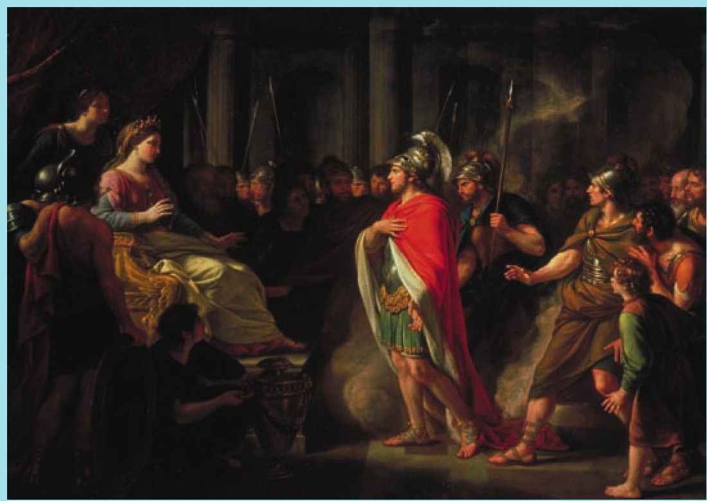
中国套环——公元200年
中国套环在法语中被称为“消磨时间的东西”，在其他语言里也有不同的称谓。这是人类历史上最古老的机械分解游戏之一。
套环游戏的目标就是将所有的套环都从一个僵硬封闭的结构中解开，而这个过程是相当复杂的，因为要想解开每一个套环，都需要解开其他相关的套环。
马丁·加德纳曾这样写道：“若是二十五套环缠绕在一起，将需要22369621个步骤才能解开，即便是最擅长此游戏的高手也要花上两年的时间才能做到。”这种游戏之所以广受欢迎，是因为这个游戏将逻辑学与数学巧妙地结合在了一起，但是解答起来却并不容易。中国套环游戏是由九个套环组成的，这已经相当具有挑战难度了。要想解开这些套环，需要341个步骤。据说，这种游戏是中国古代的政治军事家诸葛亮（公元181—234）发明的，据说是为了让他妻子在他外出征战时能够有事可做。从数学角度来看，这的确是一个非常聪明的发明。中国套环游戏与二进制数存在着逻辑层面上的联系，而解答的方法就涉及格雷二进码，这是路易斯·格罗斯在1872年发明的。据说，河内塔游戏的发明者爱德华·卢卡斯也用二进制与格雷码，找到了一种解答中国套环的优雅方式。
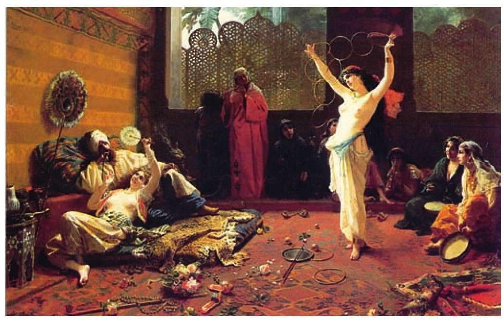
后宫女孩将套环举过头顶（贾科莫·曼泰加扎绘于1876年）
中国套环是一种关联游戏，也是一种经典的幻术。魔术师可以将看似坚固的环取出来或连上去，穿过去形成连环或是其他的模式与图形。
希罗的开门机械装置——公元50年
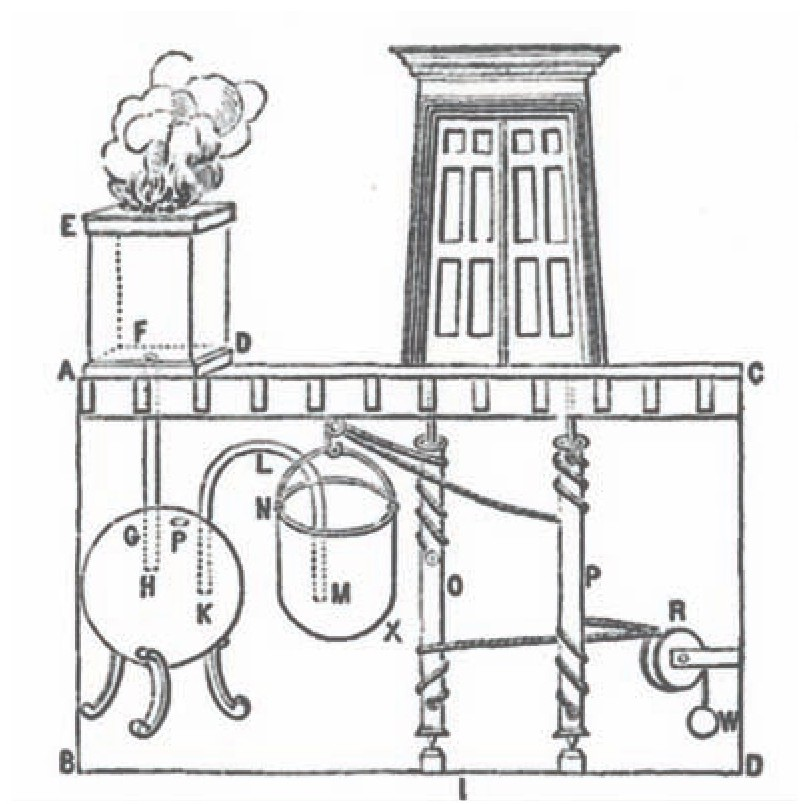
魔术把戏经常运用基本的科学原理，来让台下的观众叹为观止。
古代世界最天才的机械装置要数来自亚历山大港的希罗所做出的发明。希罗也理所当然地被视为人类历史上最早，可能也是最伟大的玩具发明家。
右图所示的神庙开门装置是希罗为魔术设计的许多玩具和自动装置之一。你能看明白希罗的这张发明蓝图，并解释这个装置的运转原理吗？
来自亚历山大港的希罗（公元20—60年）
来自亚历山大港的希罗是一位希腊数学家、科学家与发明家。他生于埃及，以机械、数学以及物理学上的成就闻名于世。
希罗绝大多数的成就都是在埃及的亚历山大港完成的。他发明了许多具有使用价值的机械装置，其中包括水风琴、消防引擎、投币装置以及汽转球。其中，汽转球是人类历史上最早运用蒸汽驱动的引擎装置，这是一个可以不断转动的蒸汽引擎，是由一个安装在锅炉上的球与两个斜向喷嘴组成的，可以让不断逃逸的蒸汽产生驱动能量。虹吸管又被称为“希罗的喷泉”，是一种能够通过气压制造出垂直喷射流的装置。
希罗还以他在几何学（这是数学的一个分支，主要研究点、线、角度与立体的关系、测量方法以及属性的学科）以及测地学（这是数学的一个分支，主要研究地球的大小与形状，以及某个物体在地球上所处的位置）的研究而闻名于世。
希罗最为著名的成就就是他的著作《度量论》（Metrica），这本书直到1896年才被发现。在这本书的第一卷里，他推导了用三角形的三条边长计算出这个三角形面积的希罗公式。这一理论是他在证明光学上的入射角等于反射角时发现的。而《度量论》这本书的第二卷则给出了计算圆柱体、圆锥体、棱柱等立体体积的方法。《度量论》的第三卷研究了按给定比例对体积和面积的分割。
希罗的“汽转球”。这是人类历史上第一个有记录的蒸汽轮机，也叫希罗的“引擎”，加热之后的反应如图所示。
约瑟夫斯的问题——公元100年
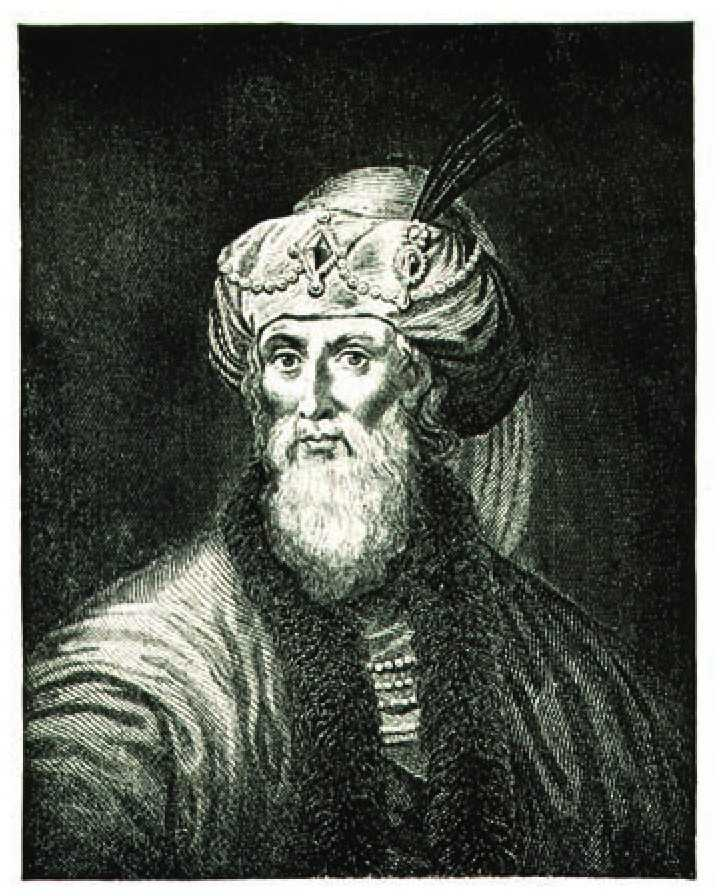
弗莱维厄斯·约瑟夫斯（37—100），著名的历史学家、士兵与学者，他决定解答一个谜题，从而拯救自己的生命。据说，当时他正在守卫犹塔菲特城，这座城市遭到了罗马将军韦帕芗的围困。约瑟夫斯与他的士兵躲藏在一个洞穴里，彼此达成了一个集体自杀的协议，而不是选择放弃。
在那个历史时刻，就诞生了约瑟夫斯所提出的这个谜题。
一共有41名吉拉德人，其中当然包括约瑟夫斯本人，都同意围成一个圆圈。之后，他们决定从某个特定位置开始数数，数到的第三个人就会被杀掉，直到剩下最后一个人，他会以自杀结束。约瑟夫斯成为最后剩下的一个人，这是纯粹的运气还是上天的眷顾呢？或者说，约瑟夫斯是为了保住自己的性命，才想出这样的办法，让自己站在最后幸存者的位置上，是不是这样的呢？
有关这个问题最早的记录可以从安布罗斯的《米兰之书》（约公元370年）里看到。
世界各地都有约瑟夫斯谜题的不同的变种。很多著名数学家，其中包括莱昂哈德·欧拉等著名数学家都研究过这个问题，但是解答这个问题的数学公式却始终都没有被找到。一般性的解答仍然只能通过试错的方法来得到。这个谜题可以说是系统顺序排列组合研究的一个简约模型——今天这个分支被称为系统分析。
约瑟夫斯的谜题
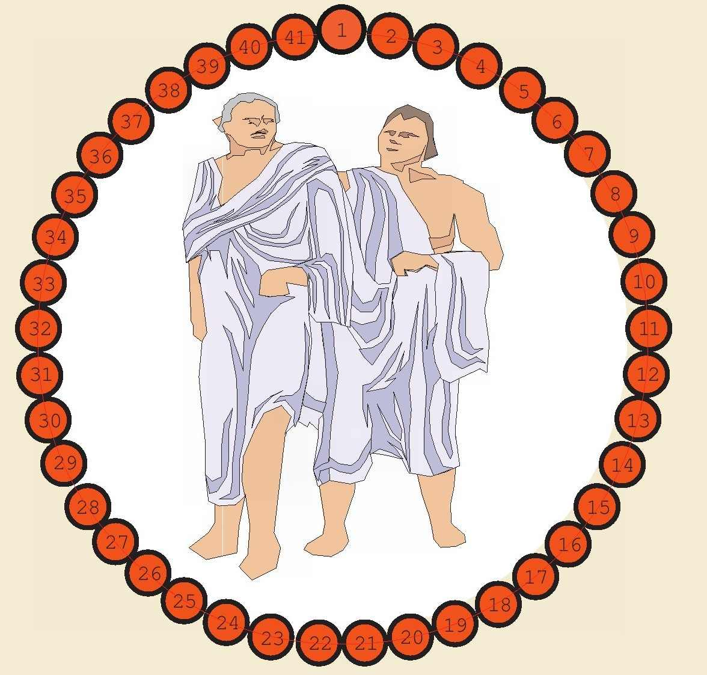
在由41人围成的圆圈里，从某个固定位置数起，每数到第三个人，这个人就会被杀掉。你认为约瑟夫斯应该站在圆圈的哪个位置才能生存下来呢？假设约瑟夫斯还想拯救他朋友的生命，那他又该让自己的朋友站在哪个位置呢？
博罗米恩环——公元200年
数学里的博罗米恩环是由三个拓扑圆组成的，这三个圆相互联系，形成了一个布伦南链锁，移除任何一个环，另外两个环就会自行解开。换言之，尽管三个环是连在一起的，但并不是两两连在一起。
“博罗米恩环”这个名字来自意大利古代贵族博罗米恩家族，它们的徽章上有这样的图案。但这个概念本身古老得多，例如，在公元200年左右犍陀罗（现在的阿富汗）的佛教徒艺术品里可见到类似的图形，甚至在7世纪的挪威象形石上也有同样的图形。
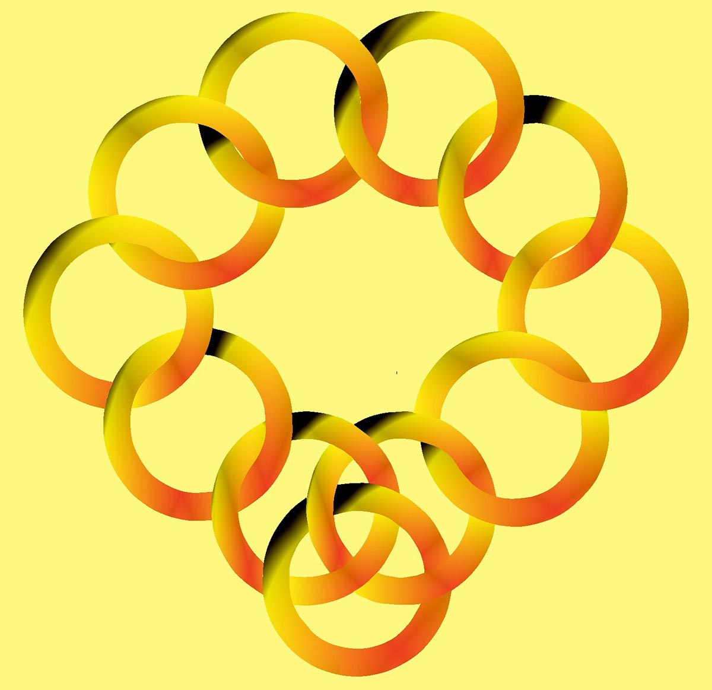
博罗米恩环
如图所示，这条项链是由11条相互联系的金环组成的。
你可以切断其中一个金环，从而将项链分为最大数量的部分。
那么，你会切断其中哪一个金环呢？
维度
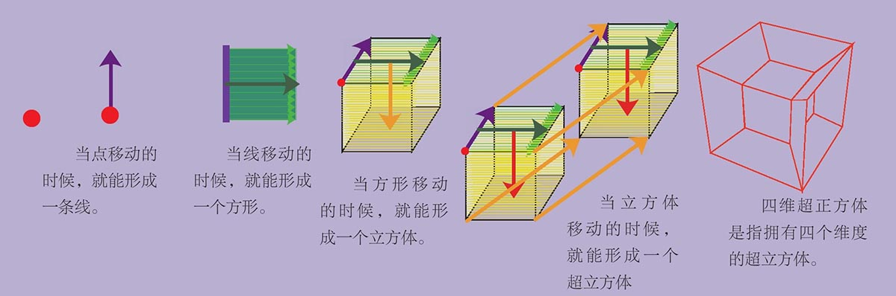
公元4世纪左右，来自亚历山大港的著名数学家帕普斯（Pappus，290—350）认识到，空间是可以通过一个移动的点来填充的；一维上移动的点能够形成一条直线；这条直线要是沿着一个直角方向移动，就会形成一个长方形；要是这个长方形能够沿着一个直角方向移动，就形成一个矩形棱柱——一个立方体了，如图所示。
帕普斯是古希腊时期最后一批伟大的数学家之一。他最著名的著作是《数学汇编》。他创作这本书显然是为了能够重振古希腊几何学的雄风。这是一个八卷本的数学概略，其中大部分的内容都保存下来了。帕普斯在亚历山大港观察过发生在公元320年10月18日的日食现象，我们可以在托勒密的著作《天文学大成》一书里找到帕普斯描述的这个精确日期。除了这个极为精确的日期之外，我们对帕普斯的生平知之甚少。他生于埃及的亚历山大港，似乎一辈子都在这个地方生活，直到死去。
通过分析帕普斯的写作风格我们推断，他应该是一名数学老师。帕普斯很少提出具有原创性的发现，但他却有着一双发现美的眼睛，能够从前人的著作里发现一些有趣的问题。要是没有他写的这些书籍，很多这类问题都将散失。作为一个专注于古希腊数学史的人，他在保存记录这些问题上所做出的贡献，可以说无人可比。
帕普斯与“鞋匠的小刀”链条
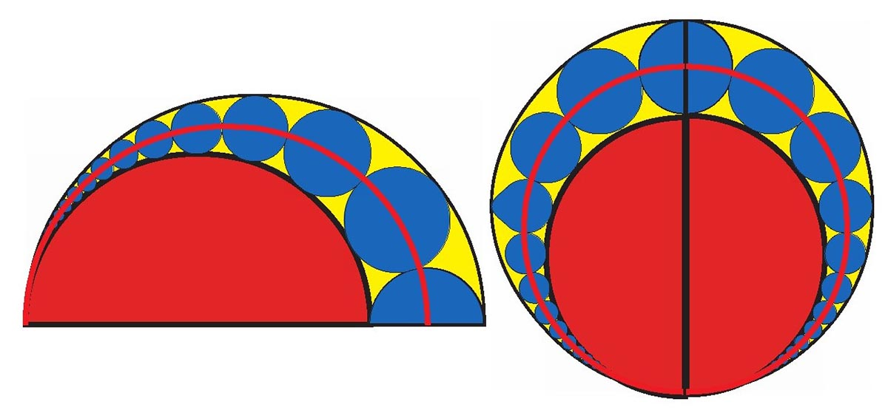
在长达500年的时间里，阿基米德所提出的“鞋匠的小刀”这个图形问题（可以参看这一章节的前面部分内容）几乎都被世人遗忘了，直到帕普斯继续开始研究这个问题。在帕普斯所描绘的“鞋匠的小刀”圆形链条里，内切圆的中心始终位于红色的线条上。
帕普斯定理
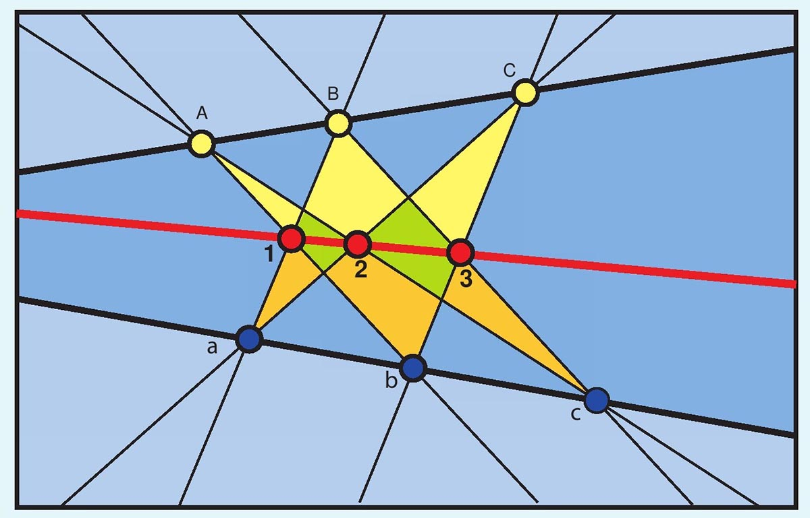
如图所示，A、B、C三个点是一条直线上的三个点，另外三个点a、b、c则在另一条直线上，让它们按照成对发生的方式形成三个交点：Ab-Ba, Ac-Ca, Bc-Cb，则这三个交点都在第三条直线上。你不妨试一试。
帕普斯的六边形定理
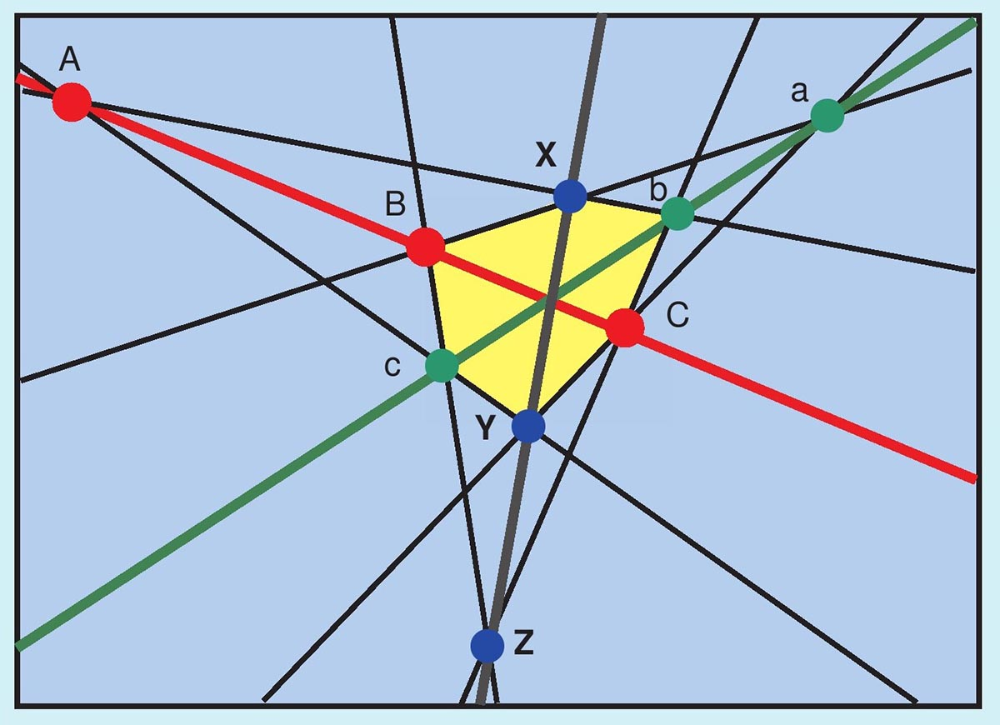
帕普斯的六边形定理是这样的：假设有一组共线点A、B、C（也就是说，A、B、C三点在同一条直线上）以及另一组共线点a、b、c, Ab与aB线、Ac与aC线、Bc与bC线的交点分别为X、Y、Z，那么X、Y、Z都是共线点。而点A、b、C与点a、B、c则能组成一个帕普斯六边形。
来自亚历山大港的丢番图——公元250年
丢番图（200—284）被称为“代数之父”。他是一位出生在亚历山大港的古希腊数学家，也是系列丛书《算术》的作者。他的著作主要是与解答代数方程式相关的，现在不少的内容都已经散失了。皮埃尔·德·费马在研究《算术》一书时，就一个丢番图认为无解的方程，他声称自己发现了“有关这个命题的真实且神奇的证据”，但并没有给出详细论证。这就是著名的费马大定理。它对数论的发展产生了巨大的推动作用。丢番图是第一位认可分数是一种数的古希腊数学家，这让正有理数成为系数与解。在当代，丢番图方程通常是指整系数的代数方程，我们要为它找到整数解。
丢番图的谜题
丢番图的谜题是一首诗，里面藏着一道数学题。这首诗是这样写的：
“这里埋葬的人名叫丢番图”，墓碑上的文字用巧妙的代数告诉了我们他的寿命，“上帝给他的童年时光占据了他一生的1/6，他长出胡子的青春时光占据了他人生的1/12。又过了他人生1/7的时光后，他结婚了。五年后，他有了一个活蹦乱跳的儿子。唉，这位大师兼圣人的儿子只活了他父亲一半的寿命就被风寒夺走了性命。在丧子之后，他在接下来的四年时光里研究数学，找寻安慰，最后去世了。”
用更平实的方式叙述的话，丢番图的青年时光占据了他人生1/6的长度。又过了人生的1/12之后才长出胡子。再过了人生的1/7之后，丢番图结婚了。五年之后，他有了一个儿子。儿子的寿命刚好是父亲寿命的一半。丢番图在他儿子去世后的第四年也去世了。所有这些数字加起来就是丢番图一生的寿命。你能够算出丢番图去世时的岁数吗？
数学符号测验
数学是一种普遍性的语言，数学符号在数学这门学科之外也有着广泛的运用。有“代数之父”之称的希腊数学家丢番图是历史上第一个使用数学符号去代替未知数字的人。在下一页里，你将会看到一系列今天还在使用的数学符号。你认识其中多少种符号呢？你可以在下面进行选择：
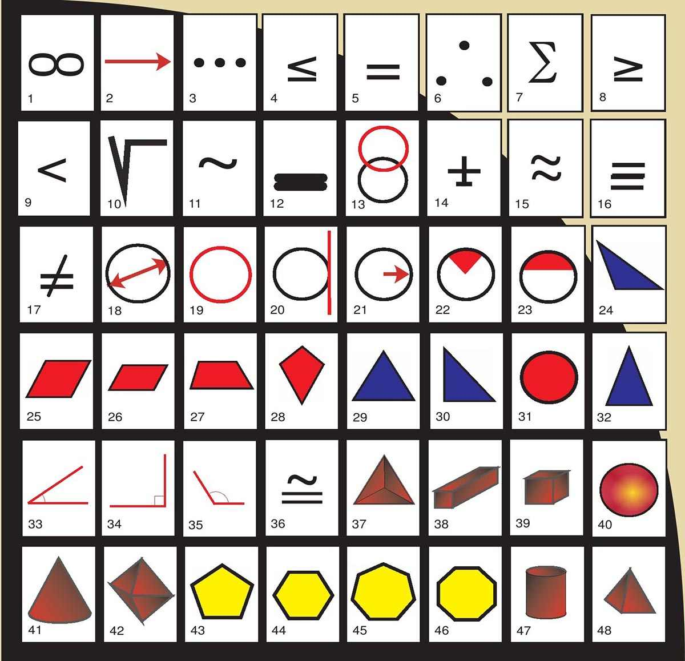
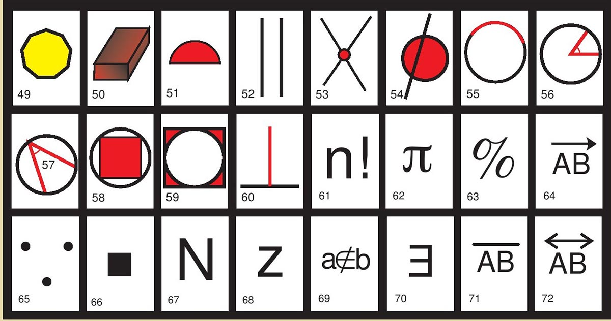
过河问题——790年
8世纪经典的过河问题今日已为世人所熟知。阿尔昆是8世纪英国约克一位数学家兼神学家。在他出版的一本书里，包含着下面这个谜题：
一个人必须带着一只狼、一头羊与一些卷心菜过河。他的船只在他之外，只能再容纳狼、羊与卷心菜中的一样。如果这个人选择将卷心菜带过河，那么狼就会将羊吃掉。只有当这个人在场的时候，羊与卷心菜才是安全的。
那么，这个人怎样才能将狼、羊与卷心菜带到对面的河岸呢？过河问题有多种不同的变种，在中世纪的欧洲非常流行，时至今日依然如此。
行星间的快递员
在我的梦里，我看到一些乘客在抱怨。作为半人马座阿尔法星宇航基地的星际快递员，我需要将乘客从宇航基地送到航天飞机上。请看看这些所谓的“乘客”吧！
在我面前站着一位名叫里格列安的动物、一个名叫德尼尔班的动物、一个看上去很古怪的四足动物，我们称之为陆地生物。
首先，里格列安与德尼尔班正处于战争状态，要是将它们留在气闸的位置上，那么它们两个中必然有一方会遭受不幸的“意外”。
与吃素的里格列安不同的是，德尼尔班是凶残的肉食动物，要是将那只软弱无力的陆地动物留下来，那么它很快就会成为德尼尔班的美食，也就不会存在这种陆地动物了。但是，这三种动物又必须全部带到班机的气闸上。在这里，这三种动物会受到一位美丽女主人的热情招待。我需要来回往返几次（因为每一次我只能带一名“乘客”，但我知道我能办到），最后才不会出现任何意外，也没有动物会被吃掉，这三种动物都毫发无伤地出现在班机的气闸上。
我该怎么安排我的行程呢？
嫉妒的丈夫
16世纪，威尼斯数学家尼科洛·塔尔塔利亚（Nicolo Tartaglia）提出了更复杂版本的过河问题。这个问题是这样的：三个美丽的新娘与她们嫉妒心很强的丈夫来到了一条小河边。河边的一只小船每次最多只能搭载两个人。为了避免出现任何不便的状况，就必须仔细考虑过河时的搭配问题，任何女性必须在有她丈夫陪同的情况下，才可以和别的男人一起被留在岸边。那么这只小船要往返多少次才能将他们全部送到河的对岸呢？
过河的士兵
三名士兵想要过河。两个坐着小船的男孩答应帮助他们过河，但是这只船只能承受两个男孩或一名士兵的重量。这三名士兵都不会游泳。在这种情况下，他们该怎样过河，才能在渡过对岸之后，将船只返还给两位男孩呢？
剖分——多边形变换
剖分的问题数千年前就困扰过数学家，但直到10世纪，波斯天文学家艾布·瓦法才在他的著作里第一次对剖分进行了系统的研究。现在，瓦法的这本书只保留下一部分，其中就包括下面将要提到的美丽的剖分问题。
瓦法谜题是最有趣的几何剖分问题的“先行者”，将一个几何图形以最小的片数剖分、组合成为一个特定的图形。从那以后，剖分方面的记录就不断被刷新。
现在，我们可以有很多方法将一个图形的面积分为许多部分，其中一些剖分方法特别有趣。
将多个小图形组合在一起形成一个较大的图形，也很有趣——就像是在地板上拼瓷砖一样。在数学里，这被称为马赛克或是“棋盘形布置”。
直到最近，数学家们才开始认真看待剖分这个问题。被称为剖分理论的数学分支在解决许多平面与立体几何方面的问题时，都能提供极有价值的洞见。
在剖分问题中，剖分的片数是固定的，目标是用它们创造出一个模式。古代人的七巧板游戏就是一个很好的例子。
另一方面，在给出两个多边形的前提下，我们可以通过将其中一个进行剖分，从而让一个多边形变形为另一个多边形。
一个显而易见的悖论变形图形，就是通过剖分将一个图形变成很多片，然后移除其中一片，再将剩下的其他部分组装起来，形成原来的图形。虽然这是不可能的，但很多拼图游戏却似乎能够做到这点（运用几何悖论或几何消失）。
瓦法的剖分——公元900年
你能够将下面三个完全一样的正方形进行剖分，然后重新组装起来，使之成为一个较大的正方形吗？艾布·瓦法（940—998）就提出了这个问题。这是最早关于剖分变形的拼图游戏。他提出具有美感的解答方法是由9个部分拼成的。
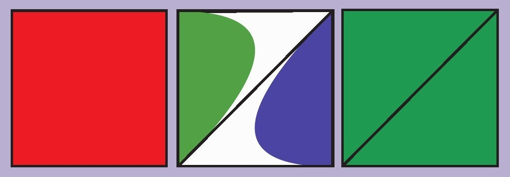
珀里加尔的记录
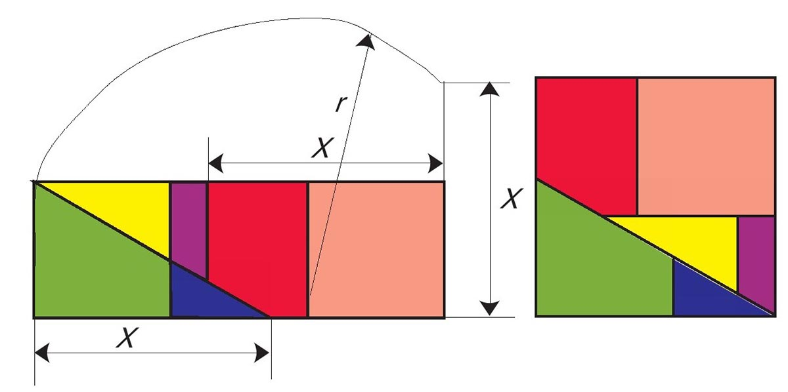
亨利·珀里加尔（1801—1898）是一位业余数学家，他只利用六个部分，正如你在左图中所看到的，刷新了瓦法的剖分记录。直到现在，这个记录依然没被人打破。除此之外，珀里加尔还以他对毕达哥拉斯定理的优雅证明闻名于世。
多米诺游戏——1200年
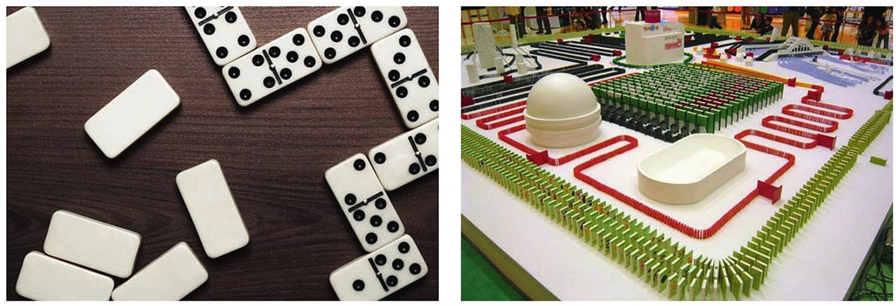
多米诺与纸牌或骰子很相像，都是一般性的游戏。多米诺牌就像一种很简单的积木，能够以无数种方式组装成不同的形状，从而创造出多种不同的游戏与拼图。
多米诺是从骰子演变出来的。事实上，标准的双六多米诺组别就代表着两个有六面的骰子。人们认为多米诺发源于12世纪的中国，虽然也有理论说多米诺源于埃及。多米诺是18世纪早期才进入意大利的，在18世纪内传遍了整个欧洲大陆，成为当时家庭聚会与酒吧最受欢迎的游戏。“多米诺”一词似乎受到基督教牧师戴的一种头巾（domino）的启发。
今天，多米诺受到了世界各地人们的欢迎。这种游戏在拉丁美洲特别受欢迎。在很多加勒比国家，多米诺被视为一种全民性的游戏。在很多国家里，都会举行年度的多米诺竞赛，而且在全球各地的很多城市都可以看到多米诺主题的俱乐部。
多米诺牌推倒世界纪录——2009年
为了创造这个纪录，主办方使用了480万块多米诺牌，要想打破现有的世界纪录，就必须要推倒超过4345028块多米诺牌。虽然最后一小部分的多米诺牌没有倒下，但是最终被推倒的多米诺牌的数量为4491863块。这是一个全新的世界纪录。
多米诺模式谜题
如图所示，这两种模式是由完整的28块多米诺牌组成的。
仔细地观察这些模式，发现这些多米诺牌是如何组装的，把每一块多米诺牌的轮廓圈出来。
这道谜题并没有看上去那么简单。
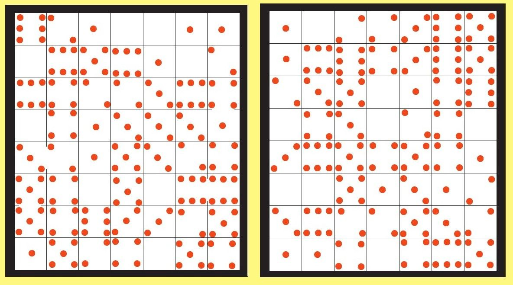
斐波那契（1170—1250）
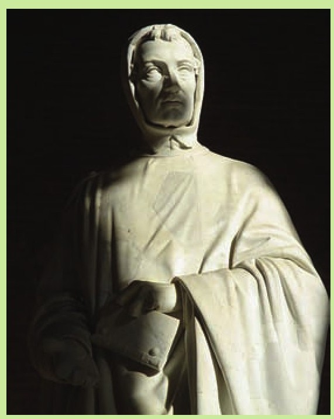
斐波那契，又称比萨的列奥纳多，他生于意大利的比萨，却在北非接受教育。现在，我们对他的生平知之甚少，有关斐波那契的少量信息都源于他著作里的一些自传性附录。
斐波那契被视为中世纪最具才华的数学家。我们现在普遍使用的十进制系统都要归功于斐波那契。当他还是一名学数学的学生时，就发现古罗马数系没有零，缺乏位值，不够用，因此决定用从0到9的印度-阿拉伯数符号取而代之。
斐波那契还以他所发明的著名数列闻名于世，这一数列现在被称为斐波那契数列（1，1，2，3，5，8，13，21，34，55）。斐波那契数与卢卡斯数存在着紧密的联系，因为斐波那契数是卢卡斯数列的一个重要补充部分（参见下一页）。这些数与黄金比例的关系也非常密切。比方说，最接近黄金比例的有理逼近是2/1，3/2，5/3和8/5。这些数还出现在大自然中，比如树木的分支、叶序（一个树干上叶子的分布情况）、洋蓟的开花、伸直的蕨类植物以及松果的排列等。
斐波那契的兔子问题——1202年
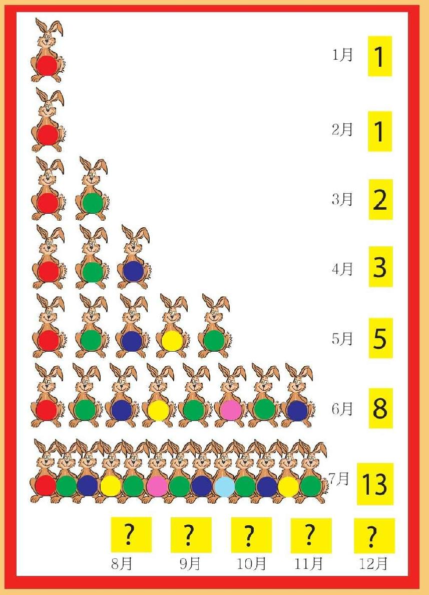
与数列有关的最著名的消遣数学问题就是斐波那契在1202年提出的经典问题：在一年之内，一对兔子能够繁殖多少对兔子。假设一对兔子一个月能够繁殖一对新兔子，而新出生的兔子在两个月后又能够繁殖一对新兔子。
这个假设性的兔子繁殖问题可以在一本名为《算术书》（Liber Abaci）的书籍里找到。该书是斐波那契在1202年写的，当时他还只是一个年仅27岁的数学家。在提出这个问题时，斐波那契假定上面提到的一对兔子是由一只雄性兔子与一只雌性兔子组成的，假设它们能在出生两个月后繁殖它们的后代，而事实上，兔子一般在出生四个月后才能达到性成熟。这种单纯的数学游戏及其人造的数列，就是我们今天所熟知的斐波那契数列。这个数列后来在自然界的许多方面都能找到。这真是一个巨大的巧合！你能计算出在一年剩下的时间里，一对兔子将会繁殖出多少只兔子吗？
斐波那契数列与黄金比例
在数学里，斐波那契数就如下面所示的数列，是无穷无尽的。下表显示了这个数列的前面13个数字。你能从这些数字中找出规律，并且写出后续的数字吗？
你能够想出斐波那契数列与黄金比例1.618有什么奇妙的联系吗？
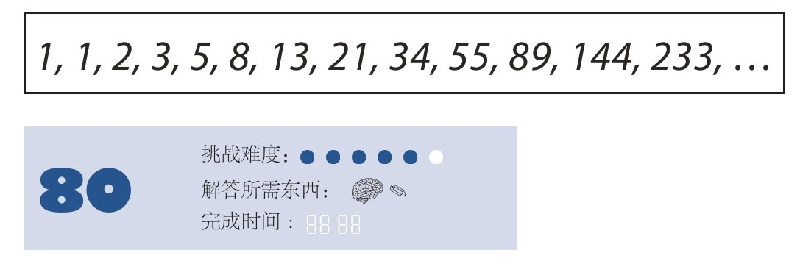
卢卡斯数列与卢卡斯数
我们不应混淆卢卡斯数与卢卡斯数列，因为卢卡斯数列是卢卡斯数所属的一类数列。爱德华·阿纳托尔·卢卡斯研究了这种数列以及与之存在密切关系的斐波那契数。
卢卡斯数与斐波那契数在卢卡斯数列中形成了一种互补关系。在数学里，递归关系是一种能够描述数列的方程式。一个或多个初项能够确定数列里的后项。
卢卡斯数列是一个整数数列，符合递归关系。卢卡斯数列的著名例子包括斐波那契数、梅森数、佩尔数、卢卡斯数以及雅各布斯涛尔数等。
每一个卢卡斯数都是之前两个数字相加的总和，就如斐波那契整数数列一样。因此，两个连续的卢卡斯数之间的比例会收敛至黄金比例的数值。但是，卢卡斯数列的头两个数是2与1，而不是斐波那契数列的0与1。因此，卢卡斯数的属性与斐波那契数存在着很多不同。
卢卡斯数的数列是：
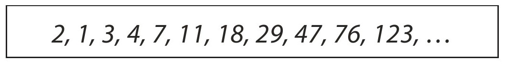
事实上，对于任何一个之前连续两个数字之和形成第三个数字的数列，无论我们是从哪两个数字开始的，后项与前项的比例最终都会无限趋近于1.6180339。
斐波那契数字阶梯
下图所示的红色数字显示，两个连续数字的商与每个数字之间存在一定的关系。你可以看看这些分数——一个斐波那契数与之前一个数字的商——会随着数列数字的不断增加而发生改变。这一长串的小数会变成怎样惊人的结果呢？
只用斐波那契数能表达每个自然数吗？比方说，你能够通过利用前面13个数来形成232这个自然数吗？
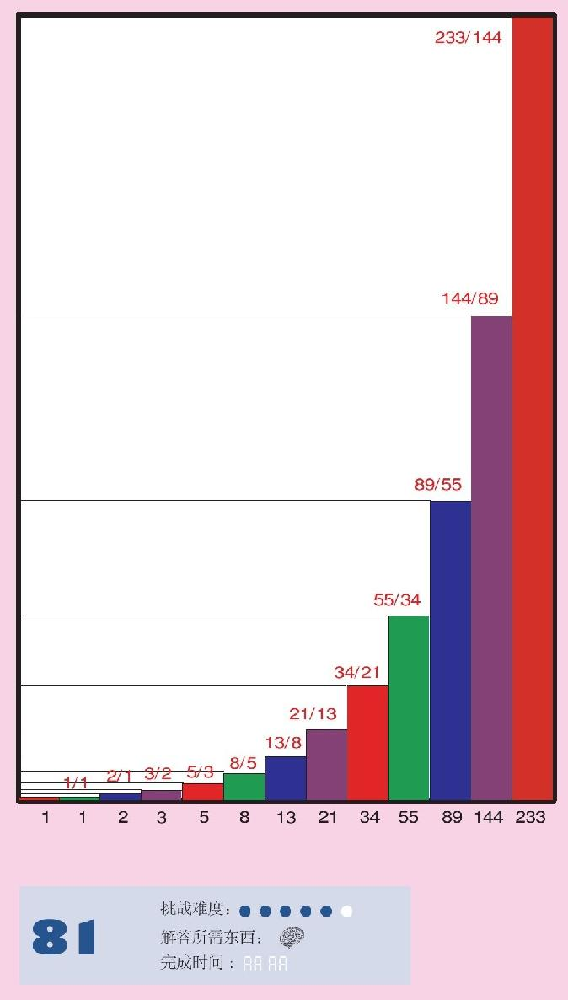
斐波那契化长方形为正方形
在这个谜题里，我将向大家呈现一个无限正方形镶嵌问题。在过去很长一段时间里，斐波那契化长方形为正方形问题都与一个优美而古老的未解之谜联系在一起：我们可以用正方形去镶嵌无限的平面，而且任意两个正方形的大小都是不同的吗？直到1938年，学界仍然认为这是不可能做到的。斐波那契长方形最接近正解。这个方法涉及斐波那契正方形序列。用斐波那契连续数作为边长设定系列正方形，组成斐波那契长方形，就能尽可能地覆盖我们所希望的面积。
在下图逆时针旋转的斐波那契数里，最后一个正方形有一部分已经超出了我们的页面（紫色的部分）。只有一个问题：斐波那契的长方形始于两个大小完全一样的正方形（参看下图），这就与任意两个正方形的面积不相等的前提条件是相违背的。如果我们能够解决另一个问题，那么我们就能够找到这个有关无限拼接的挑战性问题：正方形能够细分为多个更小的正方形，而且任意两个正方形的面积都不相等吗？这个问题在1938年得到了解答（详细的情况可以参看第7章有关完美正方形的内容）。当我们用完美正方形去取代斐波那契长方形的第一个正方形（黑色的部分）时，就能解决无限的正方形拼接问题。
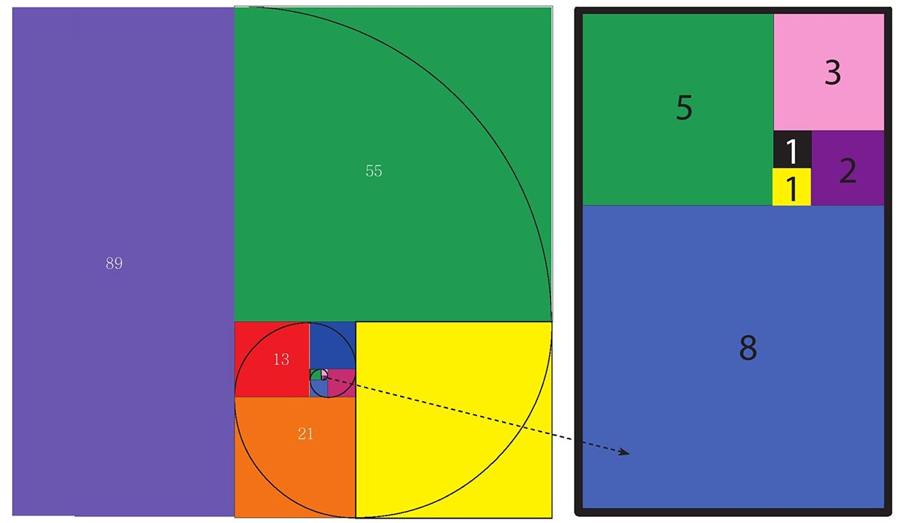
斐波那契化长方形为正方形
前13个斐波那契正方形可以形成一个斐波那契长方形，按照逆时针的螺旋方向去镶嵌整个平面。第13块正方形（蓝色）也在这一页之外的位置。正方形与螺旋都能够无限地覆盖整个平面的面积。按照这样的次序，下一个正方形的面积会是多少呢？
阿尔汗布拉宫
阿尔汗布拉宫是建立在能够俯瞰西班牙格拉纳达城的山上的独特建筑群。这座宫殿群是在1230年到1354年间建立起来的，形成了一座坚固的防御堡垒，守卫了当时西班牙的摩尔王国。1492年，摩尔人被驱逐之后，这些建筑群遭到了巨大的破坏，不过之后又得到了豪华的重建。
阿尔汗布拉宫是过去摩尔人辉煌文明及建筑的见证。建筑内部的装饰运用了许多精微复杂的几何图形。
阿尔汗布拉宫的马赛克图案——1230年
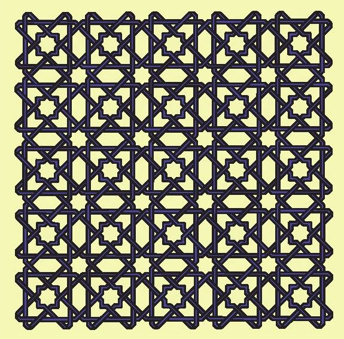
格拉纳达摩尔国王之前居住的宫殿，可以说是一座弥漫着数学美感的宝库。如图所示，这样精妙的图案形状就是运用了许多复杂的几何学设计与镶嵌完成的。请指出这是一个环状物，还是由各个分离的部分组成的呢？假如是后者，它是由多少个部分组成的呢？
永动机
我们发明的机器是饥饿的“仆人”，必须不断“喂养”它们，才能使之持续运转。
永久运动的模式可以这样进行描述：“不需要任何外在能量，一种运动能够永远地持续下去。”但因为有摩擦的存在，这是不可能做到的。当然，永动机还可以被描述为：“一个假设性的机器的运动，一旦被激发，就能够永远地运转下去，除非受到了外力或是机器损耗。”当今的科学界普遍认为，一个独立系统中的永久运动，会违反热力学第一与第二定律。之前的许多发明家都梦想着能够制造出一台完美的机器，只需要稍微启动一下，就能永远地运转下去，直到机器部件出现了损坏。
达・芬奇设计的永动机
列奥纳多·达·芬奇是人类历史上最早设计永动机的发明家之一。他的设计基于法国建筑师维拉尔·德·奥内库尔1240年提出的一个概念。这个设计的构想是利用重力来创造出一种取之不尽用之不竭的能量。对这个设计图进行观察，你能够想到达·芬奇的设计理念吗？为什么达·芬奇的设计不成功呢？
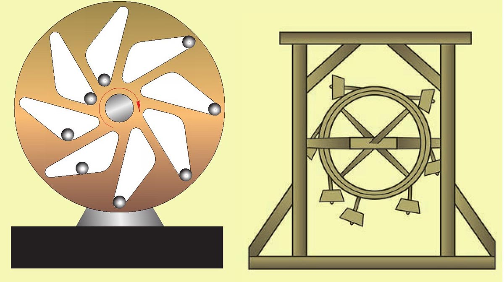
乔治·伽莫夫的机械
乔治·伽莫夫是一位乌克兰裔的美国核物理学家。1948年，他与拉尔夫·阿尔弗提出了大爆炸的早期理论，他还参与了量子力学、恒星演化以及基因方面的研究。他在1954年提出了DNA的第一个编码系统。他还发明了一个符合数学理论的永动机。观察右图，你能明白伽莫夫设计的这个机器的运转原理吗？
幻圆——1250年
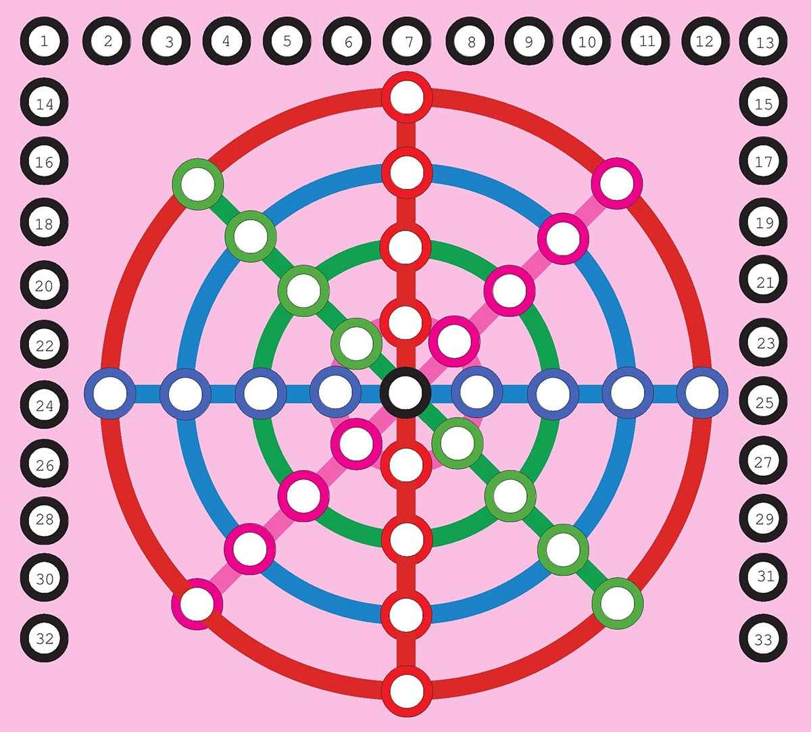
中国的数学家杨辉（1238—1298）写了两本书，其中一本就包含有早期的幻圆题，如图所示。他是历史上第一个阐述著名的帕斯卡三角形的人。布莱斯·帕斯卡在他之后才对此进行了研究。这个问题的研究成果成为当代数学的重要基石之一。
你能将从1到33的数字填入圈中，使中心位置的数字与每一个斜对角的数字加起来总和都一样吗？
小麦与棋盘问题——1260年
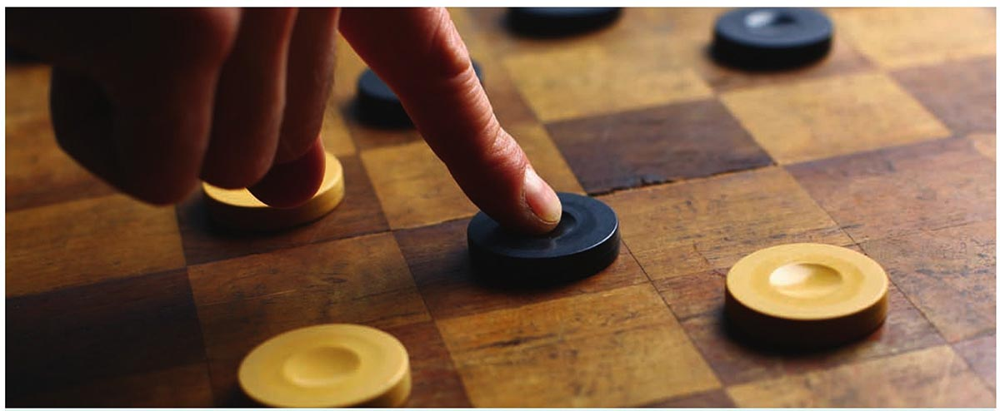
伊本·卡里汗（Ibn Khallikan）（1211—1282），这位库尔德历史学家生活在大约1260年的阿拔斯帝国（现在的伊拉克），他写了一本带有传记的百科全书。其中一篇传记就讲述了关于国际象棋的故事，里面涉及指数增长的概念。
根据这个故事的描述，沙拉汗是一位专横的印度国王。他手下一位睿智的大臣西萨·伊本·达希尔发明了这个棋盘游戏。达希尔希望借此机会告诉国王，每个阶层都很重要，都要被善加对待。
沙拉汗深受感动，他询问达希尔想要什么作为报酬。达希尔回答说，他不想要任何报酬，但是国王却坚持要奖赏他。最后，西萨说他希望得到这样的报酬：国王要将一颗麦粒放在棋盘的第一格里，将两颗麦粒放在棋盘的第二格里，将四颗麦粒放在第三格里，将八颗麦粒放在第四个格里，依此类推，使每一个格子里所放的麦粒都是前一个格子所放麦粒的两倍（今天，我们称之为指数增长）。沙拉汗答应了。你能计算出西萨能够得到多少粒米吗？最终得出的数字可能会让你大吃一惊。
印度教大神奎师那与茹阿达在玩棋盘游戏
投石问题（一种纸笔游戏）——1300年
这种游戏可以追溯到14世纪的日本。这是一种在长方形棋盘上进行的游戏，规则是按照正交模式将石块放入棋盘，然后逐一将石块移出棋盘。这个游戏也可以用纸笔来玩，可以参考上面的示例从数字1开始按顺序将数字填充进去，游戏要求从某个选定的圆圈开始，直到将所有的圆圈都填满。
游戏的规则是这样的：
1.一旦你在一个圆圈里写下一个数字，你就可以以水平或垂直的方向向另一个空圆圈里移动。
2.你不可以跳过一个空圆圈，但能够跳过一个已经写下数字的圆圈，到达这个圆圈后的空圆圈。
3.你不能跳到之前填过的圆圈里。
你能解出这道题吗？
旋轮线——1450年
圆沿直线滚动时，圆上一个点的运动轨迹形成的曲线，被称为摆线。它是旋轮线的一个典型例子，而旋轮线就是一条曲线上的一个点沿着另一条曲线转动而产生的曲线。来自库萨的尼古拉斯（1401—1464）首先对此进行了研究，直到1599年，伽利略才给它命了名。1634年，G.P.德·罗博瓦尔证明，一条摆线下方形成的面积是圆面积的三倍。1658年，克里斯托弗·雷恩（Christopher Wren）证明，摆线形成的弧长是其所在的圆直径的四倍。
摆线在现代社会的很多地方都可以看到：机械齿轮滚动时每一面都会形成一条摆线；印钞机会在平面上留下精密的摆线；流行的科学玩具万花尺用很少的移动部件就能产生无数种摆线形状。摆线有许多让人着迷的属性，它也可以解答最速降线问题（在重力作用下下降最快的曲线）和相关的等时曲线问题（也就是说，在曲线内部不存在摩擦的情况下，降落的时间与物体降落的起始位置无关）。
多边形摆线所形成的面积
在解答摆线的长度与面积的问题时，多边形摆线是很好的类比。一个正十边形沿着一条直线滚动产生的多边形弧线所包围的面积之和是多少？
这一具有美感的视觉证明是菲利普·R.马林森提出的，首次发表于《不需要语言的证明》一书（美国数学联合会于2000年出版）。
摆线与化圆为方
化圆为方问题，也就是只用直尺和圆规构建一个与某个特定圆面积相等的正方形，这可以说是古希腊数学最经典的问题之一（参看第2章的内容）。
1882年，费迪南德·冯·林德曼（1852—1939）证明，如果只使用圆规与直尺，是根本不可能构建出与已知圆面积相等的正方形的。另一方面，如果我们使用某种“机制”，那么化圆为方这个问题则是可以解答的。这种机制就涉及让这个圆沿着一条直线滚动，从而产生一种我们称之为摆线的东西。
当圆在直线上完成一圈的转动之后，那么圆上的A点就会移动到Z点，这就形成了一条摆线。从A点到Z点的直线长度就等于转动的圆的周长——也就是说，这条摆线的长度为2πr。
因此，如果B点是AZ线的中点，那么BZ的长度就等于πr。
因此，如果CZ的长度等于r，那么长方形BZDC的面积就是πr乘以r，等于πr2。这也就是转动圆的面积。
求与这个长方形面积相等的正方形，就可以得出一个以ZF为边的正方形，如图所示。
这样我们就成功地化圆为方了。
哥伦布的鸡蛋——1492年
当人们纷纷议论，说哥伦布发现美洲并不算什么巨大的成就时，哥伦布则向他的批评者提出挑战，要求他们让一个鸡蛋立起来。在他的批评者尝试多次都失败、最终选择放弃的时候，哥伦布轻敲台面上的鸡蛋，使鸡蛋一端变平，鸡蛋就稳稳地立住了。从那以后，“哥伦布的鸡蛋”就被用于描述那些明白原理之后会觉得很简单，但仍然非常了不起的想法或发现。
平衡一个鸡蛋
几年前，我们可以在一些玩具商店里看到一个巧妙的平衡性的玩具。这是一个由塑胶制成的鸡蛋，你要和哥伦布一样，让鸡蛋立在尖端上。可能你尝试多次都徒劳无功。你可以尝试各种方法，比如使劲地摇晃鸡蛋，想要发现鸡蛋内部的秘密，但是你却听不到鸡蛋内部发出的任何声响。但是，如果你按照下面几个步骤，就能解开这个谜题。
1.用手拿着鸡蛋，保持尖端垂直朝上至少30秒。
2.将鸡蛋转过来，等待10多秒，然后将这个鸡蛋的尖端立在平面上。鸡蛋会处于一种具有美感的平衡状态，在这个尖点上立住。不要让这个鸡蛋立在这个位置上的时间超过15秒。
3.在到15秒之前，你可以拿起鸡蛋，按照之前相同的姿势握住10多秒。再将鸡蛋（依然是尖端朝下）递给某人，向他发出挑战，让他们重复你的成果。
4.这个鸡蛋再也无法在之前那个尖点上处于平衡状态了，无论你尝试多少次。
根据以上描述，你能解释“鸡蛋”内部的神秘结构及其运转方式吗？
列奥纳多·达·芬奇（1452—1519）
列奥纳多·达·芬奇经常被后人视为历史上最具创造力的伟大天才，在很多方面都非常有天赋。每年都有百万名游客到罗浮宫观赏他的蒙娜丽莎，但很少人真正明白他对今天的科学和数学的深刻影响。他在佛罗伦萨当了5年学徒，1472年，他获准成为绘画协会的成员。
在1482年到1499年间，列奥纳多·达·芬奇开始在米兰公爵手下工作。在这段时间里，他对数学的兴趣日益浓厚。他研究了帕乔利的《神圣比例》并给书绘制插图，十分醉心于几何学的研究，以至于忽略了他的绘画。大约1498年，他关于机械基础理论的书籍在米兰出版，他还发明了几种化圆为方的方法。
之后，达·芬奇接受了法国国王的邀请，开始了在法国的工作生涯。1516年，法国国王授予达·芬奇“国王第一画师、建筑师与机械工程师”的头衔。达·芬奇在法国完成了自己最著名的一些画作，比如《施洗者圣约翰》《蒙娜丽莎》《圣母子与圣安妮》。但在绘画之外，他将绝大多数时间都投入到了他的科学研究与发明创造中。
达·芬奇的《维特鲁威人》画像
达・芬奇从1492年开始绘制的钢笔墨水素描——一个男人的身体正好位于在圆形与正方形之内，这也许是世界上最著名的一幅画。这幅画被称为《维特鲁威人》，以创造出这种人体比例的古罗马建筑师维特鲁威（公元前80—前15年）的名字命名。很多艺术家都试图绘制维特鲁威风格的完美男性形象，但达·芬奇的版本被认为是最精确与最具美感的。这幅画可以说是艺术与科学的完美结合。
——列奥纳多·达·芬奇
变形失真
如图所示，在变形失真的网格里，有两个红色形状。你能否通过观察，知道这两个形状在变形失真前的样子吗？
失真图像——1485年
变形艺术就是利用透视法扭曲图像，使人们只能从某个特定角度看到，或者通过镜面反射看到它。柱面镜最为常用，反射圆锥体与角锥体也不时被使用。当观察者最后感知到扭曲前的图像时，无不感到惊讶和欣喜。
达·芬奇是第一个拿变形视角做实验的人。他在1485年创造的一颗“眼睛”，是已知最早的变形画。文艺复兴时期，艺术家们在对透视进行实验的过程中取得了重大的进步，完善了用几何透视的方法去进行各种不同的延伸与扭曲画面的技术。
在16、17与18世纪，变形画变得极为流行，因为它为危险的政治言论、异端思想甚至是色情图画提供了完美的伪装。
大使——1533年
汉斯·霍尔拜因（Hans Holbein，1497—1543），亨利八世时期伟大的宫廷画家，他创造出了最著名的变形画《大使》。你知道这幅画的底部是什么奇怪的东西吗？霍尔拜为什么要把这东西放在画里，至今仍是一个谜。
变形失真的网格画面
这个看上去扭曲奇怪的生物是什么呢？当你将一个柱面镜放在这个黑色圆圈之上时，真正的画面就会呈现出来。这幅变形图真实的画面是什么呢？你能将这个失真的画面从一个圆形的网格转移到一个正方形网格上吗？（这个谜题是作者在“神奇的圆筒”里提出的）
变形的金字塔
用奇怪的模式复制、剪切与构建这个金字塔。在你完成这些步骤之后，从顶部观察金字塔，你会看到什么呢？
中断
如图所示，你能读懂下面这些文字吗？
伏尔泰的信息
法国著名讽刺作家伏尔泰（1694—1778）非常喜欢谜题，并且也创造出了许多挑战大脑的谜题。你能读懂伏尔泰在右边这幅画中隐藏的信息吗？
幻方
《洛书》，最古老的幻方，可追溯到公元前2200年。
如图所示，在正方形格子里填上相应的数字，让每一行、每一列或每条对角线上的三个数字的总和都相等，这种结构就叫幻方。
有关幻方最古老的例子可以追溯到公元前2200年中国的《洛书》。这是一个纵横都有三格的方形，模式是独一无二的。无论你如何尝试，都无法只使用1～9这几个数字做出另一个不同的3×3的幻方。
据中国古代的神话故事，大禹看到一只神龟在黄河上游来游去，这只神龟的龟壳上有一种奇怪的图案，类似于由圆点代表的数字，这些图形数字按照3×3的九宫格模式出现，每一行、每一列与每条对角线上的数字的总和都是相等的：也就是等于15。
《洛书》上记载这些数字的总和等于45，若是除以3的话，就等于一个“神奇的常量”，也就是15。一般来说，对任意一个n阶幻方，我们都能轻易地找到这个常量的计算公式：n（n2+1）/2。
在《洛书》里，有八种三元数组加起来会等于15。
这八组数组分别是：
9+5+19+4+28+6+18+5+28+4+37+6+27+5+36+5+4
排在中间的数字属于四个三元组。数字5是唯一一个出现在四个三元数组里的数字，因此这个数字必然是中间数。数字9只出现在两个三元数组里，因此它必然要放在中间一列，从而构成中间一列的数组：9+5+1。数字3与7也只出现在两个三元数组里。剩下的四个数字只能按照一种方式去进行安排——这就以优雅的方式证明了《洛书》中幻方的独特性，在此不考虑旋转或镜像。
拉丁幻方——数独
数独是现在最流行的游戏之一。人们对幻方与拉丁幻方的兴趣又被点燃了。拉丁幻方是指在一个正方网格里，有多个符号，每个符号只能在一行或是一列出现一次。如图所示的就是一个完整的3×3的拉丁正方网格。在右图里，你可以看到一个部分空格填着数字的幻方。幻方内每一行、每一列与每条对角线上的数字的总和都是相等的。你能完成这个神奇的幻方吗？
希腊-拉丁幻方
在欧拉的人生最后几年，他将基本的拉丁幻方概念延伸到正交拉丁幻方。这种正交拉丁幻方又被称为希腊-拉丁幻方成欧拉幻方。
这种幻方是由两个或更多拉丁幻方叠加而成的，因此每一个格里都包括了每个幻方的一个元素，每一行与每一列都仅出现一次两个幻方的一个元素。没有任何两个空格中会出现同阶的一对符号。欧拉知道不存在2阶的幻方。在实验的基础上，他推测，不存在任何4k+2阶的希腊-拉丁幻方，其中k=0，1，2，3，……。1901年，加斯东·塔里证明了不存在6阶的希腊-拉丁幻方，巩固了欧拉的这一猜想。然而1959年，帕克、博斯与什里坎德找到了一种建构10阶希腊-拉丁幻方的方法，为构建剩下的偶数值n阶幻方（n不能被4整除）提供了基础。拉丁幻方在欧拉之前早就已经存在了。1725年，亚克斯·奥扎拉姆在解答一个纸牌游戏时发现了一个4×4的希腊-拉丁幻方，证明了n阶欧拉幻方的存在（除了n=2与n=6）。
试着对4×4正方游戏盘上的16种颜色方块进行安排，使它们能够刚好形成一个颜色幻方，包含16个完美的四色、四尺寸结构，如右边的6种模式所示：
1.4个垂直列
2.4个水平行
3.2条主对角线
4.4个角格
5.4个中心格子
6.每个象限里四个格子
这道题一共有1152种不同的解答方法，试着找到一种解法吧。
四阶的三个拉丁幻方
三个拉丁幻方（小型，中等，大型）重叠起来，形成一个希腊-拉丁幻方，即一个4阶的正交拉丁幻方。大拉丁幻方已经给出来了。你能够按照这个模式，完成这个希腊-拉丁幻方吗？
10阶的希腊-拉丁幻方
1959年，研究人员编写了电脑程序，用于探寻10阶的希腊-拉丁幻方的存在。电脑程序在进行了长达100小时的搜索后，一无所获。
这样的结果并不出人意料，因为一个完整的搜索可能需要花上100年时间。电脑未能找到解答这一事实，似乎证明了10阶希腊-拉丁幻方确实不存在。但是，在1960年，研究人员发明了一种全新的方法，继续尝试着找寻10阶的希腊-拉丁幻方。让人惊讶的是，这回找到了不少10阶、14阶、18阶甚至更多阶的希腊-拉丁幻方。
上图是最近刚发现的一个10阶幻方，其中1～10的数字用十种颜色代表。这种具有美感的图案是消遣数学的一个经典画面。
丢勒的魔鬼幻方——1514年
存在880种不同的4阶幻方。其中最著名的要数丢勒发明的魔鬼幻方。阿尔布雷希特·丢勒（1471—1528）将这个幻方收入了他著名的版画《忧郁》（1514）里。这个幻方之所以被命名为魔鬼幻方，是因为它比幻方所要求的“幻”更神奇。这个幻方包含着海量的达到神奇常量，也就是数字34的方法。
要想让前16位正整数之和为34，一共有86种方法。你能完成右边的表格，从而让每一列、每一行与每条对角线上的数字之和都相等吗？这些方法都在丢勒的魔鬼幻方里得到展现，形成了各种不同的模式，其中不少模式还具有对称性。你能够在丢勒的4阶幻方里找到这86种模式吗？
国际象棋（一）——1512年
1512年，意大利数学家瓜里尼提出了一个与国际象棋相关的谜题，这个谜题的目标是以最少的步数，让双方的两组“骑士”交换位置。你认为，要想让双方的“骑士”都相互交换位置，最少需要走多少步呢？
国际象棋（二）
右图是根据瓜里尼的游戏衍生出来的，涉及两组三个“骑士”。要想将两组“骑士”交换位置，至少需要多少步？
等角航线——1537年
等角航线是一个航海术语，指的是一条以相同角度穿过所有经线的曲线，这样航行时罗盘始终指向一个方向。这意味着选取一个相对于真北（磁北）极的起始方位角开始出发，然后按照同样的角度航行，不改变方向。
在地球表面沿着等角航线前进的可能性，是由葡萄牙数学家佩德罗·努内斯（Pedro Nunes）于1537年在他的著作《航海防御协定》中提出的。之后托马斯·哈利奥特（Thomas Harriot）在16世纪90年代进一步发展了他的这一想法。
和等角航线相反，大圆航线给出了一个球体表面上两点间的最短路径，但却需要频繁地改变航向。
北极旅行
假设你从北极出发，让你的指南针始终指着一个固定的方向来航行。你在地球表面上会有怎样的航线呢？
尼科洛·丰塔纳·塔尔塔利亚（Niccolo Fontana Tartaglia，1499—1557）
意大利数学家尼科洛・丰塔纳・塔尔塔利亚当时在威尼斯担任记账员和工程师。
塔尔塔利亚一生最大的成就是找到了三次方程的解法。他的著作《各种问题和发明》（1546年出版）包含了不少消遣数学问题，其中就有“如何将17匹马分开”这个问题，正如图所示。
塔尔塔利亚出版过许多书，包括阿基米德与欧几里得著作的第一个意大利语译本，和一本受到广泛赞扬的数学汇编书。塔尔塔利亚是第一个将数学用于弹道研究的人。他的研究工作后来通过伽利略对自由落体的研究得到证实。
将17匹马分开——1546年
一个老人在临终前将他的17匹马分给他的三个儿子，所分的比例为1/2:1/3:1/9。这三个儿子能够执行父亲的遗嘱吗？这17匹马又该怎样分呢？